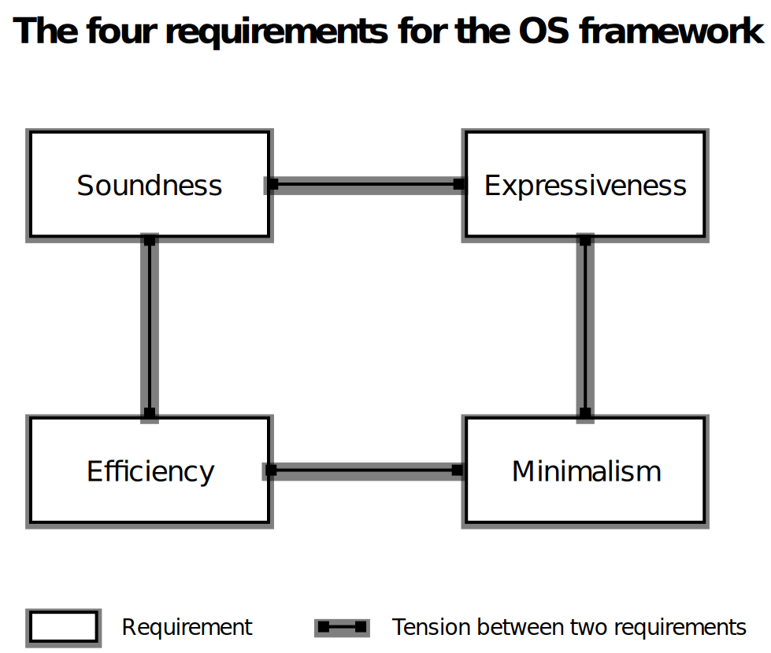

The Asterinas Book
Welcome to the documentation for Asterinas, an open-source project and community focused on developing cutting-edge Rust OS kernels.
Book Structure
This book is divided into six distinct parts:
Part 1: Asterinas NixOS
Asterinas NixOS is the first distribution built on top of the Asterinas kernel. It is based on NixOS, leveraging its powerful configuration model and rich package ecosystem, while swapping out the Linux kernel for Asterinas.
Part 2: Asterinas Kernel
Explore the modern OS kernel at the heart of Asterinas. Designed to realize the full potential of Rust, Asterinas Kernel implements the Linux ABI in a safe and efficient way. This means it can seamlessly replace Linux, offering enhanced safety and security.
Part 3: Asterinas OSTD
The Asterinas OSTD lays down a minimalistic, powerful, and solid foundation
for OS development.
It’s akin to Rust’s std crate
but crafted for the demands of safe Rust OS development.
The Asterinas Kernel is built on this very OSTD.
Part 4: Asterinas OSDK
The OSDK is a command-line tool that streamlines the workflow to create, build, test, and run Rust OS projects that are built upon Asterinas OSTD. Developed specifically for OS developers, it extends Rust’s Cargo tool to better suite their specific needs. OSDK is instrumental in the development of Asterinas Kernel.
Part 5: Contributing to Asterinas
Asterinas is in its early stage and welcomes your contributions! This part provides guidance on how you can become an integral part of the Asterinas project.
Part 6: Requests for Comments (RFCs)
Significant decisions in Asterinas are made through a transparent RFC process. This part describes the RFC process and archives all approvaed RFCs.
Licensing
Asterinas’s source code and documentation primarily use the Mozilla Public License (MPL), Version 2.0. Select components are under more permissive licenses, detailed here.
Our choice of the weak-copyleft MPL license reflects a strategic balance:
-
Commitment to open-source freedom: We believe that OS kernels are a communal asset that should benefit humanity. The MPL ensures that any alterations to MPL-covered files remain open source, aligning with our vision. Additionally, we do not require contributors to sign a Contributor License Agreement (CLA), preserving their rights and preventing the possibility of their contributions being made closed source.
-
Accommodating proprietary modules: Recognizing the evolving landscape where large corporations also contribute significantly to open-source, we accommodate the business need for proprietary kernel modules. Unlike GPL, the MPL permits the linking of MPL-covered files with proprietary code.
In conclusion, we believe that MPL is the best choice to foster a vibrant, robust, and inclusive open-source community around Asterinas.
Asterinas NixOS
Asterinas NixOS is the first distribution for Asterinas. We choose NixOS as the base OS for its unparalleled customizability and rich package ecosystem. Asterinas NixOS is intended to look and feel like vanilla NixOS, except that it replaces Linux with Asterinas as its kernel. For more rationale about choosing NixOS, see the RFC.
Disclaimer: Asterinas is an independent, community-led project. Asterinas NixOS is not an official NixOS project and has no affiliation with the NixOS Foundation. No sponsorship or endorsement is implied.
Asterinas NixOS is not ready for production use. We provide Asterinas NixOS to make the Asterinas kernel more accessible, allowing early adopters and enthusiasts to try it out and provide feedback. In addition, Asterinas developers use this distro as a key development vehicle to facilitate enabling and testing more real-world applications on the Asterinas kernel.
Getting Started
End Users
The following instructions describe how to install Asterinas NixOS in a VM using the Asterinas NixOS installer ISO.
-
Launch an x86-64 Ubuntu container:
docker run -it --privileged --network=host ubuntu:latest bash -
Inside the container, install QEMU:
apt update apt install -y qemu-system-x86 qemu-utils -
Download the latest Asterinas NixOS installer ISO from GitHub Releases.
-
Create a file that will be used as the target disk to install Asterinas NixOS:
# The capacity of the disk is 10GB; adjust it as you see fit dd if=/dev/zero of=aster_nixos_disk.img bs=1G count=10 -
Start an x86-64 VM with two drives: one is the installer CD-ROM and the other is the target disk:
export INSTALLER_ISO=/path/to/your/downloaded/installer.iso qemu-system-x86_64 \ -cpu host -m 8G -enable-kvm \ -drive file="$INSTALLER_ISO",media=cdrom -boot d \ -drive if=virtio,format=raw,file=aster_nixos_disk.img \ -chardev stdio,id=mux,mux=on,logfile=qemu.log \ -device virtio-serial-pci -device virtconsole,chardev=mux \ -serial chardev:mux -monitor chardev:mux \ -nographicAfter the VM boots, you now have access to the installation environment.
-
Edit the
configuration.nixfile in the home directory to customize the NixOS system to be installed:vim configuration.nixThe complete syntax and guidance for the
configuration.nixfile can be found in the NixOS manual. If you are not familiar with NixOS, you can simply skip this step.Not all combinations of settings in
configuration.nixare supported by Asterinas NixOS yet. The ones that have been tested are documented in the subsequent chapters. -
Start installation:
install_aster_nixos.sh --config configuration.nix --disk /dev/vda --force-format-diskThe installation process involves downloading packages and may take around 30 minutes to complete, depending on your network speed.
-
After the installation is complete, you can shut down the VM:
poweroffNow Asterinas NixOS is installed in
aster_nixos_disk.img. -
Start a VM to boot the newly installed Asterinas NixOS:
qemu-system-x86_64 \ -cpu host -m 8G -enable-kvm \ -bios /usr/share/qemu/OVMF.fd \ -drive if=none,format=raw,id=x0,file=aster_nixos_disk.img \ -device virtio-blk-pci,drive=x0,disable-legacy=on,disable-modern=off \ -chardev stdio,id=mux,mux=on,logfile=qemu.log \ -device virtio-serial-pci -device virtconsole,chardev=mux \ -serial chardev:mux -monitor chardev:mux \ -device virtio-net-pci,netdev=net0,disable-legacy=on,disable-modern=off \ -netdev user,id=net0 \ -device isa-debug-exit,iobase=0xf4,iosize=0x04 \ -nographic -display vnc=127.0.0.1:21If a desktop environment is enabled in the
configuration.nixfile, you can view the graphical interface using a VNC client.
Kernel Developers
-
Follow Steps 1 and 2 in the “Getting Started” section of the Asterinas Kernel to set up the development environment.
-
Inside the Docker container, generate a disk image with Asterinas NixOS installed using this command:
make nixosor this command:
make iso && make run_isoThe difference between the two methods is that the first installs NixOS to a disk image entirely inside the container, whereas the second emulates the manual ISO installation steps (see the previous section) by running a VM. Using either method results in a disk image with an Asterinas NixOS installation.
-
Start a VM to run the installed Asterinas NixOS:
make run_nixos
Popular Applications
The Nix package collection contains over 120,000 packages. Many of them may already work out of the box on Asterinas NixOS, but it is impractical to test every package and document its support status. Instead, we group popular applications into categories and document the ones we have verified to work.
Package Management
NixOS provides a set of tools for building, installing, and managing packages.
Verified Usage
nix-build
nix-build builds Nix derivations and produces outputs in the Nix store.
It is the preferred way to build software reproducibly.
# Step 1: Create a clean workspace
rm -rf /tmp/nix-hello-c && mkdir -p /tmp/nix-hello-c && cd /tmp/nix-hello-c
# Step 2: Write a C program
cat > hello.c <<'EOF'
#include <stdio.h>
int main(void) {
puts("Hello, World!");
return 0;
}
EOF
# Step 3: Write a default.nix
cat > default.nix <<'EOF'
{ pkgs ? import <nixpkgs> {} }:
pkgs.stdenv.mkDerivation {
pname = "hello-c";
version = "0.1.0";
src = ./.;
dontConfigure = true;
buildPhase = ''
cc hello.c -o hello
'';
installPhase = ''
mkdir -p $out/bin
install -m755 hello $out/bin/hello
'';
}
EOF
# Step 4: Build and run
nix-build
./result/bin/hello
nix-env
nix-env installs or removes individual packages in your user profile.
# Install the `hello` package
nix-env -iA nixos.hello
# Remove the `hello` package
nix-env -e hello
nix-shell
nix-shell creates a temporary development environment with the specified dependencies.
This is useful for testing software without modifying your system environment.
# Enter a shell with the `hello` package available
nix-shell -p hello
nixos-rebuild
nixos-rebuild manages the entire system configuration declaratively.
It applies changes defined in configuration.nix,
and is the recommended approach for installing packages system-wide.
# Edit the system configuration file
vim /etc/nixos/configuration.nix
# Apply configuration changes and rebuild the system without rebooting
nixos-rebuild test
Desktop Environment
Xfce
Xfce is a lightweight desktop environment for UNIX-like operating systems.
Installation
Add the following lines to the configuration.nix file:
services.xserver.enable = true;
services.xserver.desktopManager.xfce.enable = true;
Verified Backends
- Display server:
- Xorg display server
- Graphics drivers:
- Standard UEFI VGA framebuffer
Verified Functionality
- Changing desktop wallpapers and background settings
- Adjusting font size, style, and system theme
- Creating application shortcuts and desktop launchers
- Managing panels and window behavior
- Using the settings manager and file browser
Verified GUI Applications
Utilities:
galculator: Calculatormousepad: The default Xfce text editormupdf: A lightweight PDF and XPS viewer
Games:
fairymax: Chessfive-or-more: GNOME alignment gamelbreakout2: Breakout/Arkanoid clonegnome-chess: GNOME chessgnome-mines: Minesweepergnome-sudoku: GNOME sudokutali: GNOME dice gamexboard: Chessxgalaga: Galaga-style arcade game
Containerization
Podman
Podman is a modern, daemonless container engine that provides a Docker-compatible command-line interface, making it easy for users familiar with Docker to transition.
Installation
To install Podman, add the following line to configuration.nix:
virtualization.podman.enable = true;
Verified Usage
podman run
podman run runs a command in a new container.
# Start a container, execute a command, and then exit
podman run --name=c1 docker.io/library/alpine ls /etc
# Start a container and attach to an interactive shell
podman run -it docker.io/library/alpine
podman image
podman image manages local images.
# List downloaded images
podman image ls
podman ps
podman ps lists containers.
# Show the status of all containers (including exited ones)
podman ps -a
podman rm
podman rm removes one or more containers.
# Remove a container named foo
podman rm foo
Asterinas Kernel
Overview
Asterinas is a secure, fast, and general-purpose OS kernel that provides an Linux-compatible ABI. It can serve as a seamless replacement for Linux while enhancing memory safety and developer friendliness.
-
Asterinas prioritizes memory safety by employing Rust as its sole programming language and limiting the use of unsafe Rust to a clearly defined and minimal Trusted Computing Base (TCB). This innovative approach, known as the framekernel architecture, establishes Asterinas as a more secure and dependable kernel option.
-
Asterinas surpasses Linux in terms of developer friendliness. It empowers kernel developers to (1) utilize the more productive Rust programming language, (2) leverage a purpose-built toolkit called OSDK to streamline their workflows, and (3) choose between releasing their kernel modules as open source or keeping them proprietary, thanks to the flexibility offered by MPL.
While the journey towards a production-grade OS kernel can be challenging, we are steadfastly progressing towards our goal. Currently, Asterinas only supports x86-64 VMs. However, our aim for 2024 is to make Asterinas production-ready on x86-64 for both bare-metal and VM environments.
Getting Started
Get yourself an x86-64 Linux machine with Docker installed. Follow the three simple steps below to get Asterinas up and running.
-
Download the latest source code.
git clone https://github.com/asterinas/asterinas -
Run a Docker container as the development environment.
docker run -it --privileged \ --network=host \ -v /dev:/dev \ -v $(pwd)/asterinas:/root/asterinas \ asterinas/asterinas:0.17.0-20260227 -
Inside the container, go to the project folder to build and run Asterinas.
make kernel make run_kernel
If everything goes well, Asterinas is now up and running inside a VM.
Advanced Build and Test Instructions
User-Mode Unit Tests
Asterinas consists of many crates,
some of which do not require a VM environment
and can be tested with the standard cargo test.
They are listed in the root Makefile
and can be tested together through the following Make command.
make test
To test an individual crate, enter the directory of the crate and invoke cargo test.
Kernel-Mode Unit Tests
Many crates in Asterinas do require a VM environment to be tested. The unit tests for these crates are empowered by OSDK.
make ktest
To test an individual crate in kernel mode, enter the directory of the crate and invoke cargo osdk test.
cd asterinas/ostd
cargo osdk test
Integration Test
General Test
The following command builds and runs the test binaries in test/initramfs/src/apps directory on Asterinas.
make run_kernel AUTO_TEST=test
Syscall Test
The following command builds and runs the syscall test binaries on Asterinas.
make run_kernel AUTO_TEST=syscall
To run system call tests interactively, start an instance of Asterinas with the system call tests built and installed.
make run_kernel BUILD_SYSCALL_TEST=1
Then, in the interactive shell, run the following script to start the syscall tests.
/opt/syscall_test/run_syscall_test.sh
Debug
Using GDB to Debug
To debug Asterinas via QEMU GDB support, you can compile Asterinas in the debug profile, start an Asterinas instance and run the GDB interactive shell in another terminal.
Start a GDB-enabled VM of Asterinas with OSDK and wait for debugging connection:
make gdb_server
The server will listen at the default address specified in Makefile, i.e., a local TCP port :1234.
Change the address in Makefile for your convenience,
and check cargo osdk run -h for more details about the address.
Two options are provided to interact with the debug server.
-
A GDB client: start a GDB client in another terminal.
make gdb_client -
VS Code: CodeLLDB extension is required. After starting a debug server with OSDK from the shell with
make gdb_server, a temporarylaunch.jsonis generated under.vscode. Your previous launch configs will be restored after the server is down. PressF5(Run and Debug) to start a debug session via VS Code. ClickContinue(or, pressF5) at the first break to resume the paused server instance, then it will continue until reaching your first breakpoint.
Note that if debugging with KVM enabled, you must use hardware assisted breakpoints. See “hbreak” in the GDB manual for details.
Intel TDX
Asterinas can serve as a secure guest OS for Intel TDX-protected virtual machines (VMs). This documentation describes how Asterinas can be run and tested easily on a TDX-enabled Intel server.
Intel TDX (Trust Domain Extensions) is a Trusted Execution Environment (TEE) technology that enhances VM security by creating isolated, hardware-enforced trust domains with encrypted memory, secure initialization, and attestation mechanisms. For more information about Intel TDX, jump to the last section.
Why choose Asterinas for Intel TDX
VM TEEs such as Intel TDX deserve a more secure option for its guest OS than Linux. Linux, with its inherent memory safety issues and large Trusted Computing Base (TCB), has long suffered from security vulnerabilities due to memory safety bugs. Additionally, when Linux is used as the guest kernel inside a VM TEE, it must process untrusted inputs (over 1500 instances in Linux, per Intel’s estimation) from the host (via hypercalls, MMIO, and etc.). These untrusted inputs create new attack surfaces that can be exploited through memory safety vulnerabilities, known as Iago attacks.
Asterinas offers greater memory safety than Linux, particularly against Iago attacks. Thanks to its framekernel architecture, the memory safety of Asterinas relies solely on the Asterinas Framework, excluding the safe device drivers built on top of the Asterinas Framework that may handle untrusted inputs from the host. For more information, see our talk on OC3’24.
Prepare the Intel TDX Environment
Please make sure your server supports Intel TDX.
See this guide or other materials to enable Intel TDX in host OS.
To verify the TDX host status, you can type:
dmesg | grep "TDX module initialized"
The following result is an example:
[ 20.507296] tdx: TDX module initialized.
TDX module initialized means TDX module is loaded successfully.
Build and run Asterinas
-
Download the latest source code.
git clone https://github.com/asterinas/asterinas -
Run a Docker container as the development environment.
docker run -it --privileged --network=host --device=/dev/kvm -v $(pwd)/asterinas:/root/asterinas asterinas/asterinas:0.17.0-20260227 -
Inside the container, go to the project folder to build and run Asterinas.
make run_kernel INTEL_TDX=1
If everything goes well, Asterinas is now up and running inside a TD.
Using GDB to Debug
A Trust Domain (TD) is debuggable if its ATTRIBUTES.DEBUG bit is 1.
In this mode, the host VMM can use Intel TDX module functions
to read and modify TD VCPU state and TD private memory,
which are not accessible when the TD is non-debuggable.
Start Asterinas in a GDB-enabled TD and wait for debugging connection:
make gdb_server INTEL_TDX=1
Behind the scene, this command adds debug=on configuration to the QEMU parameters
to enable TD debuggable mode.
The server will listen at the default address specified in Makefile,
i.e., a local TCP port :1234.
Start a GDB client in another terminal:
make gdb_client INTEL_TDX=1
Note that you must use hardware assisted breakpoints because KVM is enabled when debugging a TD.
About Intel TDX
Intel® Trust Domain Extensions (Intel® TDX) is Intel’s newest confidential computing technology. This hardware-based trusted execution environment (TEE) facilitates the deployment of trust domains (TD), which are hardware-isolated virtual machines (VM) designed to protect sensitive data and applications from unauthorized access.
A CPU-measured Intel TDX module enables Intel TDX. This software module runs in a new CPU Secure Arbitration Mode (SEAM) as a peer virtual machine manager (VMM), and supports TD entry and exit using the existing virtualization infrastructure. The module is hosted in a reserved memory space identified by the SEAM Range Register (SEAMRR).
Intel TDX uses hardware extensions for managing and encrypting memory and protects both the confidentiality and integrity of the TD CPU state from non-SEAM mode.
Intel TDX uses architectural elements such as SEAM, a shared bit in Guest Physical Address (GPA), secure Extended Page Table (EPT), physical-address-metadata table, Intel® Total Memory Encryption – Multi-Key (Intel® TME-MK), and remote attestation.
Intel TDX ensures data integrity, confidentiality, and authenticity, which empowers engineers and tech professionals to create and maintain secure systems, enhancing trust in virtualized environments.
For more information, please refer to Intel TDX website.
The Framekernel Architecture
Framekernel: What and Why
The security of a microkernel, the speed of a monolithic kernel.
Asterinas introduces a novel OS architecture called framekernel, which unleashes the full power of Rust to bring the best of both monolithic kernels and microkernels.
Within the framekernel architecture, the entire OS resides in the same address space (like a monolithic kernel) and is required to be written in Rust. However, there’s a twist—the kernel is partitioned in two halves: the OS Framework (akin to a microkernel) and the OS Services. Only the OS Framework is allowed to use unsafe Rust, while the OS Services must be written exclusively in safe Rust.
| Unsafe Rust | Responsibilities | Code Sizes | |
|---|---|---|---|
| OS Framework | Allowed | Encapsulate low-level unsafe code within high-level safe APIs | Small |
| OS Services | Not allowed | Implement OS functionalities, e.g., system calls, file systems, device drivers | Large |
As a result, the memory safety of the kernel can be reduced to that of the OS Framework, thus minimizing the Trusted Computing Base (TCB) associated with the kernel’s memory safety. On the other hand, the single address space allows different parts of the kernel to communicate in the most efficient means, e.g., function calls and shared memory. Thanks to the framekernel architecture, Asterinas can offer both exceptional performance and enhanced safety.
Requirements for the OS Framework
While the concept of framekernel is straightforward, the design and implementation of the required OS framework present challenges. It must concurrently fulfill four criteria.

- Soundness. The safe APIs of the framework are considered sound if no undefined behaviors shall be triggered by whatever safe Rust code that a programmer may write using the APIs
- as long as the code is verified by the Rust toolchain. Soundness ensures that the OS framework, in conjunction with the Rust toolchain, bears the full responsibility for the kernel’s memory safety.
-
Expressiveness. The framework should empower developers to implement a substantial range of OS functionalities in safe Rust using the APIs. It is especially important that the framework enables writing device drivers in safe Rust, considering that device drivers comprise the bulk of the code in a fully-fleged OS kernel (like Linux).
-
Minimalism. As the TCB for memory safety, the framework should be kept as small as possible. No functionality should be implemented inside the framework if doing it outside is possible.
-
Efficiency. The safe API provided by the framework is only allowed to introduce minimal overheads. Ideally, these APIs should be realized as zero-cost abstractions.
Fortunately, our efforts to design and implement an OS framework meeting these standards have borne fruit in the form of the Asterinas OSTD. Using this framework as a foundation, we have developed the Asterinas Kernel; this framework also enables others to create their own framekernels, with different goals and tradeoffs.
Linux Compatibility
“We don’t break user space.”
— Linus Torvalds
Asterinas is dedicated to maintaining compatibility with the Linux ABI, ensuring that applications and administrative tools designed for Linux can seamlessly operate within Asterinas. While we prioritize compatibility, it is important to note that Asterinas does not, nor will it in the future, support the loading of Linux kernel modules.
System Calls
At the time of writing, Asterinas supports over 230 Linux system calls for the x86-64 architecture, which are summarized in the table below.
| Numbers | Names | Supported | Flag Coverage |
|---|---|---|---|
| 0 | read | ✅ | üíØ |
| 1 | write | ✅ | üíØ |
| 2 | open | ✅ | ⚠️ |
| 3 | close | ✅ | üíØ |
| 4 | stat | ✅ | üíØ |
| 5 | fstat | ✅ | üíØ |
| 6 | lstat | ✅ | üíØ |
| 7 | poll | ✅ | ⚠️ |
| 8 | lseek | ✅ | ⚠️ |
| 9 | mmap | ✅ | ⚠️ |
| 10 | mprotect | ✅ | ⚠️ |
| 11 | munmap | ✅ | üíØ |
| 12 | brk | ✅ | üíØ |
| 13 | rt_sigaction | ✅ | ⚠️ |
| 14 | rt_sigprocmask | ✅ | ⚠️ |
| 15 | rt_sigreturn | ✅ | üíØ |
| 16 | ioctl | ✅ | ⚠️ |
| 17 | pread64 | ✅ | üíØ |
| 18 | pwrite64 | ✅ | üíØ |
| 19 | readv | ✅ | üíØ |
| 20 | writev | ✅ | üíØ |
| 21 | access | ✅ | üíØ |
| 22 | pipe | ✅ | üíØ |
| 23 | select | ✅ | üíØ |
| 24 | sched_yield | ✅ | üíØ |
| 25 | mremap | ✅ | ⚠️ |
| 26 | msync | ✅ | ⚠️ |
| 27 | mincore | ❌ | N/A |
| 28 | madvise | ✅ | ⚠️ |
| 29 | shmget | ❌ | N/A |
| 30 | shmat | ❌ | N/A |
| 31 | shmctl | ❌ | N/A |
| 32 | dup | ✅ | üíØ |
| 33 | dup2 | ✅ | üíØ |
| 34 | pause | ✅ | üíØ |
| 35 | nanosleep | ✅ | üíØ |
| 36 | getitimer | ✅ | üíØ |
| 37 | alarm | ✅ | üíØ |
| 38 | setitimer | ✅ | üíØ |
| 39 | getpid | ✅ | üíØ |
| 40 | sendfile | ✅ | üíØ |
| 41 | socket | ✅ | ⚠️ |
| 42 | connect | ✅ | ⚠️ |
| 43 | accept | ✅ | ⚠️ |
| 44 | sendto | ✅ | ⚠️ |
| 45 | recvfrom | ✅ | ⚠️ |
| 46 | sendmsg | ✅ | ⚠️ |
| 47 | recvmsg | ✅ | ⚠️ |
| 48 | shutdown | ✅ | üíØ |
| 49 | bind | ✅ | ⚠️ |
| 50 | listen | ✅ | üíØ |
| 51 | getsockname | ✅ | üíØ |
| 52 | getpeername | ✅ | üíØ |
| 53 | socketpair | ✅ | ⚠️ |
| 54 | setsockopt | ✅ | ⚠️ |
| 55 | getsockopt | ✅ | ⚠️ |
| 56 | clone | ✅ | ⚠️ |
| 57 | fork | ✅ | üíØ |
| 58 | vfork | ✅ | üíØ |
| 59 | execve | ✅ | üíØ |
| 60 | exit | ✅ | üíØ |
| 61 | wait4 | ✅ | ⚠️ |
| 62 | kill | ✅ | üíØ |
| 63 | uname | ✅ | üíØ |
| 64 | semget | ✅ | ⚠️ |
| 65 | semop | ✅ | ⚠️ |
| 66 | semctl | ✅ | ⚠️ |
| 67 | shmdt | ❌ | N/A |
| 68 | msgget | ❌ | N/A |
| 69 | msgsnd | ❌ | N/A |
| 70 | msgrcv | ❌ | N/A |
| 71 | msgctl | ❌ | N/A |
| 72 | fcntl | ✅ | ⚠️ |
| 73 | flock | ✅ | üíØ |
| 74 | fsync | ✅ | üíØ |
| 75 | fdatasync | ✅ | üíØ |
| 76 | truncate | ✅ | üíØ |
| 77 | ftruncate | ✅ | üíØ |
| 78 | getdents | ✅ | üíØ |
| 79 | getcwd | ✅ | üíØ |
| 80 | chdir | ✅ | üíØ |
| 81 | fchdir | ✅ | üíØ |
| 82 | rename | ✅ | üíØ |
| 83 | mkdir | ✅ | üíØ |
| 84 | rmdir | ✅ | üíØ |
| 85 | creat | ✅ | üíØ |
| 86 | link | ✅ | üíØ |
| 87 | unlink | ✅ | üíØ |
| 88 | symlink | ✅ | üíØ |
| 89 | readlink | ✅ | üíØ |
| 90 | chmod | ✅ | üíØ |
| 91 | fchmod | ✅ | üíØ |
| 92 | chown | ✅ | üíØ |
| 93 | fchown | ✅ | üíØ |
| 94 | lchown | ✅ | üíØ |
| 95 | umask | ✅ | üíØ |
| 96 | gettimeofday | ✅ | üíØ |
| 97 | getrlimit | ✅ | üíØ |
| 98 | getrusage | ✅ | ⚠️ |
| 99 | sysinfo | ✅ | üíØ |
| 100 | times | ❌ | N/A |
| 101 | ptrace | ❌ | N/A |
| 102 | getuid | ✅ | üíØ |
| 103 | syslog | ❌ | N/A |
| 104 | getgid | ✅ | üíØ |
| 105 | setuid | ✅ | üíØ |
| 106 | setgid | ✅ | üíØ |
| 107 | geteuid | ✅ | üíØ |
| 108 | getegid | ✅ | üíØ |
| 109 | setpgid | ✅ | üíØ |
| 110 | getppid | ✅ | üíØ |
| 111 | getpgrp | ✅ | üíØ |
| 112 | setsid | ✅ | üíØ |
| 113 | setreuid | ✅ | üíØ |
| 114 | setregid | ✅ | üíØ |
| 115 | getgroups | ✅ | üíØ |
| 116 | setgroups | ✅ | üíØ |
| 117 | setresuid | ✅ | üíØ |
| 118 | getresuid | ✅ | üíØ |
| 119 | setresgid | ✅ | üíØ |
| 120 | getresgid | ✅ | üíØ |
| 121 | getpgid | ✅ | üíØ |
| 122 | setfsuid | ✅ | üíØ |
| 123 | setfsgid | ✅ | üíØ |
| 124 | getsid | ✅ | üíØ |
| 125 | capget | ✅ | ⚠️ |
| 126 | capset | ✅ | ⚠️ |
| 127 | rt_sigpending | ✅ | üíØ |
| 128 | rt_sigtimedwait | ✅ | üíØ |
| 129 | rt_sigqueueinfo | ❌ | N/A |
| 130 | rt_sigsuspend | ✅ | üíØ |
| 131 | sigaltstack | ✅ | üíØ |
| 132 | utime | ✅ | üíØ |
| 133 | mknod | ✅ | üíØ |
| 134 | uselib | ❌ | N/A |
| 135 | personality | ❌ | N/A |
| 136 | ustat | ❌ | N/A |
| 137 | statfs | ✅ | üíØ |
| 138 | fstatfs | ✅ | üíØ |
| 139 | sysfs | ❌ | N/A |
| 140 | getpriority | ✅ | üíØ |
| 141 | setpriority | ✅ | üíØ |
| 142 | sched_setparam | ✅ | üíØ |
| 143 | sched_getparam | ✅ | üíØ |
| 144 | sched_setscheduler | ✅ | ⚠️ |
| 145 | sched_getscheduler | ✅ | üíØ |
| 146 | sched_get_priority_max | ✅ | üíØ |
| 147 | sched_get_priority_min | ✅ | üíØ |
| 148 | sched_rr_get_interval | ❌ | N/A |
| 149 | mlock | ❌ | N/A |
| 150 | munlock | ❌ | N/A |
| 151 | mlockall | ❌ | N/A |
| 152 | munlockall | ❌ | N/A |
| 153 | vhangup | ❌ | N/A |
| 154 | modify_ldt | ❌ | N/A |
| 155 | pivot_root | ❌ | N/A |
| 156 | _sysctl | ❌ | N/A |
| 157 | prctl | ✅ | ⚠️ |
| 158 | arch_prctl | ✅ | ⚠️ |
| 159 | adjtimex | ❌ | N/A |
| 160 | setrlimit | ✅ | üíØ |
| 161 | chroot | ✅ | üíØ |
| 162 | sync | ✅ | üíØ |
| 163 | acct | ❌ | N/A |
| 164 | settimeofday | ❌ | N/A |
| 165 | mount | ✅ | ⚠️ |
| 166 | umount2 | ✅ | ⚠️ |
| 167 | swapon | ❌ | N/A |
| 168 | swapoff | ❌ | N/A |
| 169 | reboot | ✅ | ⚠️ |
| 170 | sethostname | ✅ | üíØ |
| 171 | setdomainname | ✅ | üíØ |
| 172 | iopl | ❌ | N/A |
| 173 | ioperm | ❌ | N/A |
| 174 | create_module | ❌ | N/A |
| 175 | init_module | ❌ | N/A |
| 176 | delete_module | ❌ | N/A |
| 177 | get_kernel_syms | ❌ | N/A |
| 178 | query_module | ❌ | N/A |
| 179 | quotactl | ❌ | N/A |
| 180 | nfsservctl | ❌ | N/A |
| 181 | getpmsg | ❌ | N/A |
| 182 | putpmsg | ❌ | N/A |
| 183 | afs_syscall | ❌ | N/A |
| 184 | tuxcall | ❌ | N/A |
| 185 | security | ❌ | N/A |
| 186 | gettid | ✅ | üíØ |
| 187 | readahead | ❌ | N/A |
| 188 | setxattr | ✅ | üíØ |
| 189 | lsetxattr | ✅ | üíØ |
| 190 | fsetxattr | ✅ | üíØ |
| 191 | getxattr | ✅ | üíØ |
| 192 | lgetxattr | ✅ | üíØ |
| 193 | fgetxattr | ✅ | üíØ |
| 194 | listxattr | ✅ | üíØ |
| 195 | llistxattr | ✅ | üíØ |
| 196 | flistxattr | ✅ | üíØ |
| 197 | removexattr | ✅ | üíØ |
| 198 | lremovexattr | ✅ | üíØ |
| 199 | fremovexattr | ✅ | üíØ |
| 200 | tkill | ❌ | N/A |
| 201 | time | ✅ | üíØ |
| 202 | futex | ✅ | ⚠️ |
| 203 | sched_setaffinity | ✅ | üíØ |
| 204 | sched_getaffinity | ✅ | üíØ |
| 205 | set_thread_area | ❌ | N/A |
| 206 | io_setup | ❌ | N/A |
| 207 | io_destroy | ❌ | N/A |
| 208 | io_getevents | ❌ | N/A |
| 209 | io_submit | ❌ | N/A |
| 210 | io_cancel | ❌ | N/A |
| 211 | get_thread_area | ❌ | N/A |
| 212 | lookup_dcookie | ❌ | N/A |
| 213 | epoll_create | ✅ | üíØ |
| 214 | epoll_ctl_old | ❌ | N/A |
| 215 | epoll_wait_old | ❌ | N/A |
| 216 | remap_file_pages | ❌ | N/A |
| 217 | getdents64 | ✅ | üíØ |
| 218 | set_tid_address | ✅ | üíØ |
| 219 | restart_syscall | ❌ | N/A |
| 220 | semtimedop | ✅ | ⚠️ |
| 221 | fadvise64 | ✅ | ⚠️ |
| 222 | timer_create | ✅ | ⚠️ |
| 223 | timer_settime | ✅ | üíØ |
| 224 | timer_gettime | ✅ | üíØ |
| 225 | timer_getoverrun | ❌ | N/A |
| 226 | timer_delete | ✅ | üíØ |
| 227 | clock_settime | ❌ | N/A |
| 228 | clock_gettime | ✅ | ⚠️ |
| 229 | clock_getres | ❌ | N/A |
| 230 | clock_nanosleep | ✅ | ⚠️ |
| 231 | exit_group | ✅ | üíØ |
| 232 | epoll_wait | ✅ | üíØ |
| 233 | epoll_ctl | ✅ | ⚠️ |
| 234 | tgkill | ✅ | üíØ |
| 235 | utimes | ✅ | üíØ |
| 236 | vserver | ❌ | N/A |
| 237 | mbind | ❌ | N/A |
| 238 | set_mempolicy | ❌ | N/A |
| 239 | get_mempolicy | ❌ | N/A |
| 240 | mq_open | ❌ | N/A |
| 241 | mq_unlink | ❌ | N/A |
| 242 | mq_timedsend | ❌ | N/A |
| 243 | mq_timedreceive | ❌ | N/A |
| 244 | mq_notify | ❌ | N/A |
| 245 | mq_getsetattr | ❌ | N/A |
| 246 | kexec_load | ❌ | N/A |
| 247 | waitid | ✅ | ⚠️ |
| 248 | add_key | ❌ | N/A |
| 249 | request_key | ❌ | N/A |
| 250 | keyctl | ❌ | N/A |
| 251 | ioprio_set | ✅ | ⚠️ |
| 252 | ioprio_get | ✅ | ⚠️ |
| 253 | inotify_init | ✅ | üíØ |
| 254 | inotify_add_watch | ✅ | ⚠️ |
| 255 | inotify_rm_watch | ✅ | üíØ |
| 256 | migrate_pages | ❌ | N/A |
| 257 | openat | ✅ | ⚠️ |
| 258 | mkdirat | ✅ | üíØ |
| 259 | mknodat | ✅ | üíØ |
| 260 | fchownat | ✅ | üíØ |
| 261 | futimesat | ✅ | üíØ |
| 262 | newfstatat | ✅ | ⚠️ |
| 263 | unlinkat | ✅ | üíØ |
| 264 | renameat | ✅ | üíØ |
| 265 | linkat | ✅ | üíØ |
| 266 | symlinkat | ✅ | üíØ |
| 267 | readlinkat | ✅ | üíØ |
| 268 | fchmodat | ✅ | üíØ |
| 269 | faccessat | ✅ | üíØ |
| 270 | pselect6 | ✅ | üíØ |
| 271 | ppoll | ✅ | ⚠️ |
| 272 | unshare | ✅ | ⚠️ |
| 273 | set_robust_list | ✅ | üíØ |
| 274 | get_robust_list | ❌ | N/A |
| 275 | splice | ❌ | N/A |
| 276 | tee | ❌ | N/A |
| 277 | sync_file_range | ❌ | N/A |
| 278 | vmsplice | ❌ | N/A |
| 279 | move_pages | ❌ | N/A |
| 280 | utimensat | ✅ | ⚠️ |
| 281 | epoll_pwait | ✅ | üíØ |
| 282 | signalfd | ✅ | üíØ |
| 283 | timerfd_create | ✅ | ⚠️ |
| 284 | eventfd | ✅ | üíØ |
| 285 | fallocate | ✅ | ⚠️ |
| 286 | timerfd_settime | ✅ | ⚠️ |
| 287 | timerfd_gettime | ✅ | üíØ |
| 288 | accept4 | ✅ | ⚠️ |
| 289 | signalfd4 | ✅ | üíØ |
| 290 | eventfd2 | ✅ | ⚠️ |
| 291 | epoll_create1 | ✅ | üíØ |
| 292 | dup3 | ✅ | üíØ |
| 293 | pipe2 | ✅ | ⚠️ |
| 294 | inotify_init1 | ✅ | ⚠️ |
| 295 | preadv | ✅ | üíØ |
| 296 | pwritev | ✅ | üíØ |
| 297 | rt_tgsigqueueinfo | ❌ | N/A |
| 298 | perf_event_open | ❌ | N/A |
| 299 | recvmmsg | ❌ | N/A |
| 300 | fanotify_init | ❌ | N/A |
| 301 | fanotify_mark | ❌ | N/A |
| 302 | prlimit64 | ✅ | üíØ |
| 303 | name_to_handle_at | ❌ | N/A |
| 304 | open_by_handle_at | ❌ | N/A |
| 305 | clock_adjtime | ❌ | N/A |
| 306 | syncfs | ✅ | üíØ |
| 307 | sendmmsg | ✅ | ⚠️ |
| 308 | setns | ✅ | ⚠️ |
| 309 | getcpu | ✅ | üíØ |
| 310 | process_vm_readv | ❌ | N/A |
| 311 | process_vm_writev | ❌ | N/A |
| 312 | kcmp | ❌ | N/A |
| 313 | finit_module | ❌ | N/A |
| 314 | sched_setattr | ✅ | ⚠️ |
| 315 | sched_getattr | ✅ | ⚠️ |
| 316 | renameat2 | ✅ | ⚠️ |
| 318 | getrandom | ✅ | ⚠️ |
| 319 | memfd_create | ✅ | ⚠️ |
| 322 | execveat | ✅ | üíØ |
| 327 | preadv2 | ✅ | ⚠️ |
| 328 | pwritev2 | ✅ | ⚠️ |
| 332 | statx | ✅ | ⚠️ |
| 424 | pidfd_send_signal | ✅ | üíØ |
| 434 | pidfd_open | ✅ | üíØ |
| 435 | clone3 | ✅ | ⚠️ |
| 436 | close_range | ✅ | üíØ |
| 438 | pidfd_getfd | ✅ | üíØ |
| 439 | faccessat2 | ✅ | ⚠️ |
| 441 | epoll_pwait2 | ✅ | üíØ |
| 452 | fchmodat2 | ✅ | üíØ |
-
Supported:
- ✅ = syscall supported
- ❌ = not supported
-
Flag Coverage:
- üíØ = all flags/commands/modes are supported
- ⚠️ = syscall works, but some flags/modes are not implemented
- ❓ = implementation exists, but we have not audited its coverage yet
- N/A = not applicable (e.g., syscall not supported)
Most of these system calls (or their variants) are also supported for the RISC-V and LoongArch architectures.
File Systems
Here is the list of supported file systems:
- Devfs
- Devpts
- Ext2
- Procfs
- Ramfs
Sockets
Here is the list of supported socket types:
- TCP sockets over IPv4
- UDP sockets over IPv4
- Unix sockets
vDSO
Here is the list of supported symbols in vDSO:
__vdso_clock_gettime__vdso_gettimeofday__vdso_time
Boot Protocols
Here is the list of supported boot protocols:
Syscall Flag Coverage
This section documents the flag coverage of Asterinas’s implementation of Linux system calls. It introduces System Call Matching Language (SCML), a lightweight domain‑specific language for specifying allowed and disallowed patterns of system‑call invocations.
The rest of this section uses SCML to accurately and concisely describe both supported and unsupported functionality of system calls, which are divided into the following categories:
- Process and thread management
- Memory management
- File & directory operations
- File systems & mount control
- File descriptor & I/O control
- Inter-process communication
- Networking & sockets
- Signals & timers
- Namespaces, cgroups & security
- System information & misc
System Call Matching Language (SCML)
SCML specifies matching patterns for system‑call invocations. Asterinas developers can easily write SCML rules to describe supported patterns. Likewise, users and developers can intuitively read these rules to understand which system calls and features are available.
SCML is designed to integrate seamlessly with strace, the standard Linux system‑call tracer. Strace emits each invocation in a C‑style syntax; given a set of SCML rules, a tool can automatically determine whether a strace log entry conforms to the supported patterns. This paves the way for an SCML‑based analyzer that reports unsupported calls in any application’s trace.
Strace: A Quick Example
To illustrate, run strace on a simple “Hello, World!” program:
$ strace ./hello_world
A typical trace might look like this:
execve("./hello_world", ["./hello_world"], 0xffffffd3f710 /* 4 vars */) = 0
brk(NULL) = 0xaaaabdc1b000
mmap(NULL, 8192, PROT_READ|PROT_WRITE, MAP_PRIVATE|MAP_ANONYMOUS, -1, 0) = 0xffff890f4000
openat(AT_FDCWD, "/lib/aarch64-linux-gnu/libc.so.6", O_RDONLY|O_CLOEXEC) = 3
read(3, "\177ELF\2\1\1\3\0\0\0\0\0\0\0\0\3\0\267\0\1\0\0\0\360\206\2\0\0\0\0\0"..., 832) = 832
fstat(3, {st_mode=S_IFREG|0755, st_size=1722920, ...}) = 0
…
write(1, "Hello, World!\n", 14) = 14
exit_group(0) = ?
Key points of this output:
- System calls are rendered as
name(arg1, …, argN). - Flags appear as
FLAG1|FLAG2|…|FLAGN. - Structs use
{field1=value1, …}. - Arrays are shown as
[value1, …].
SCML’s syntax draws directly from these conventions.
SCML by Example
SCML is intentionally simple: most Linux system‑call semantics hinge on bitflags. SCML rules act as templates: you define a rule once, and a human or an analyzer uses it to check if a syscall invocation matches it or not.
Imagine you’re developing a Linux-compatible OS (like Asterinas) that supports just a restricted subset of syscalls and their options. We will use SCML to describe the restricted functionality.
Matching Rules for System Calls
For example,
your OS supports the open system call
with one or more of the four flags: O_RDONLY, O_WRONLY, O_RDWR, and O_CLOEXEC:
This constraint can be expressed in the following system call matching rule.
open(path, flags = O_RDONLY | O_WRONLY | O_RDWR | O_CLOEXEC);
To allow file creation,
you add another matching rule that
includes the O_CREAT flag and requires a mode argument:
open(path, flags = O_CREAT | O_RDONLY | O_WRONLY | O_RDWR | O_CLOEXEC, mode);
To support the O_PATH flag
(only valid with O_CLOEXEC, not with O_RDONLY, O_WRONLY, or O_RDWR),
you add a third matching rule:
open(path, flags = O_PATH | O_CLOEXEC);
SCML rules constrain only the flagged arguments;
other parameters (like path and mode) accept any value.
In many system calls, the number of arguments may vary depending on the flags provided.
To accommodate this, SCML allows you to use the .. wildcard in the parameter list.
This indicates that any additional arguments are accepted, regardless of their value or count.
For example:
open(path, flags = O_RDONLY | O_WRONLY | O_RDWR | O_CLOEXEC, ..);
Here, the .. wildcard makes the rule flexible enough to match invocations of open with extra parameters,
such as when the O_CREAT flag is present and a mode argument is required.
This approach makes it easy to write concise rules that only constrain the arguments of interest,
while allowing other parameters to vary as needed.
C-Style Comments
SCML also supports C‑style comments:
// All matching rules for the open syscall.
// A supported invocation of the open syscall must match at least one of the rules.
open(path, flags = O_RDONLY | O_WRONLY | O_RDWR | O_CLOEXEC);
open(path, flags = O_CREAT | O_RDONLY | O_WRONLY | O_RDWR | O_CLOEXEC, mode);
open(path, flags = O_PATH | O_CLOEXEC);
Matching Rules for Bitflags
Above, we embedded flag combinations directly within individual system‑call rules, which can lead to duplication and make maintenance harder. SCML allows you to define named bitflag rules that can be reused across multiple rules. This reduces repetition and centralizes your flag definitions. For example:
// Define a reusable bitflags rule
access_mode = O_RDONLY | O_WRONLY | O_RDWR;
open(path, flags = <access_mode> | O_CLOEXEC);
open(path, flags = O_CREAT | <access_mode> | O_CLOEXEC, mode);
open(path, flags = O_PATH | O_CLOEXEC);
Matching Rules for Structs
SCML can match flags inside struct fields.
Consider sigaction:
struct sigaction = {
sa_flags = SA_NOCLDSTOP | SA_NOCLDWAIT,
..
};
Here, .. is a wildcard for remaining fields that we do not care.
Then, we can write a system call rule that
refers to the struct rule using the <struct_rule> syntax.
sigaction(signum, act = <sigaction>, oldact = <sigaction>);
Instead of defining a separate struct rule, you can also inline the struct pattern directly in the parameter list. This is convenient when the struct pattern is only used once or when you want to express different constraints for the same struct type in different contexts.
For example, the following rule inlines the struct pattern for capget:
capget(
hdrp = {
version = _LINUX_CAPABILITY_VERSION_3,
..
},
datap
);
Matching Rules for Arrays
SCML can describe how to match flags embedded inside the struct values of an array.
This is the case of the poll system call.
It takes an array of values of struct pollfd,
whose event and revents fields are bitflags.
// Support all but the POLLPRI flags
events = POLLIN | POLLOUT | POLLRDHUP | POLLERR | POLLHUP | POLLNVAL;
struct pollfd = {
events = <events>,
revents = <events>,
..
};
poll(fds = [ <pollfd> ], nfds, timeout);
Notice how SCML denotes an array with the [ <struct_rule> ] syntax.
Special Built-in Matching Rules
Bitflags-based matching rules described above are expressive enough to
capture most patterns of interesting system call arguments.
But some system call arguments cannot be characterized with bitflags.
To address such cases, SCML introduces two special built-in matching rules:
<PATH> and <INTEGER>
The file path matching rule
The <PATH> matching rule is used to
denote a system call argument of a C-string file path.
For example, the matching rules for the open system call
can be enhanced with <PATH> as follows:
access_mode = O_RDONLY | O_WRONLY | O_RDWR;
open(path = <PATH>, flags = <access_mode> | O_CLOEXEC);
open(path = <PATH>, flags = O_CREAT | <access_mode> | O_CLOEXEC, mode);
open(path = <PATH>, flags = O_PATH | O_CLOEXEC);
File paths provide a new dimension to determine whether a system call is supported or not. Linux has multiple pseudo file systems such as DevTmpFS, ProcFS, SysFS, CgroupFS, and ConfigFS, mounted at well-known locations. A Linux-compatible OS such as Asterinas may only support a sub-tree of an pseudo FS. Knowing which system call arguments refer to file paths, a tool may be built to automatically issue warnings when unsupported file paths are accessed by system calls.
The integer matching rule
The <INTEGER> matching rule can match any integer system call argument
such as 1234, -100, 0xdeadbeef, and 0o666.
It can be used as a fallback rule
when a system call takes an argument of either bitflags or integer.
timer_create(
clockid =
// Static clock IDs represented as bitflags
CLOCK_PROCESS_CPUTIME_ID | CLOCK_THREAD_CPUTIME_ID | CLOCK_REALTIME | CLOCK_MONOTONIC | CLOCK_BOOTTIME |
// Dynamic clock IDs (per-process or per-thread clock IDs)
// represented as an integer value.
<INTEGER>,
sevp,
timerid
);
Advanced Usage
Just like you can write multiple rules of the same system call, you may define multiple rules for the same struct:
// Rules for control message header
struct cmsghdr = {
cmsg_level = SOL_SOCKET,
cmsg_type = SO_TIMESTAMP_OLD | SCM_RIGHTS | SCM_CREDENTIALS,
..
};
struct cmsghdr = {
cmsg_level = SOL_IP,
cmsg_type = IP_TTL,
..
};
A cmsghdr value matches if it satisfies any one rule.
Struct rules may also be nested:
// Rule for message header, which refers to the rules for control message header
struct msghdr = {
msg_control = [ <cmsghdr> ],
..
};
recvmsg(socket, message = <msghdr>, flags);
SCML supports arrays with nested structures and heterogeneous element types,
as encountered in system calls like recvmsg where netlink message payloads
follow the TLV (Type-Length-Value) format.
Arrays can contain multiple elements of varying types:
inline struct patterns ({ ... }), nested arrays ([ ... ]),
or references to named rules (<identifier>).
This flexibility allows SCML to represent hierarchical data structures
as they appear in strace output.
For example, when receiving a netlink message about adding a network address:
struct iovec = {
iov_base = [
[
{
nlmsg_type = RTM_NEWADDR,
..
},
[
[ { nla_type = IFA_CACHEINFO, .. } ]
]
]
],
..
};
recvmsg(
sockfd,
msg = {
msg_iov = [ <iovec> ],
..
},
flags
);
This example demonstrates receiving a netlink message of type
RTM_NEWADDR containing nested attributes with cache information
(IFA_CACHEINFO). The nested array structure illustrates how SCML
handles heterogeneous arrays where elements can be both structs and
nested arrays, reflecting the hierarchical TLV encoding typical of netlink.
Formal Syntax
Below is the formal syntax of SCML, expressed in Extended Backus–Naur Form (EBNF). Non‑terminals are in angle brackets, terminals in quotes.
<scml> ::= { <rule> }
<rule> ::= <syscall-rule> ';'
| <struct-rule> ';'
| <bitflags-rule> ';'
<syscall-rule> ::= <identifier> '(' [ <param-list> ] ')'
<param-list> ::= '..'
| <param> { ',' <param> } [ ',' '..' ]
<param> ::= <identifier> '=' <flag-pattern>
| <identifier> '=' <struct-pattern>
| <identifier> '=' <array-pattern>
| <identifier>
<flag-pattern> ::= <flag-part> { '|' <flag-part> }
<flag-part> ::= <identifier>
| '<' <identifier> '>'
<array-pattern> ::= '[' <array-element> { ',' <array-element> } ']'
<array-element> ::= '<' <identifier> '>'
| <struct-pattern>
| <array-pattern>
<struct-rule> ::= 'struct' <identifier> '=' <struct-pattern>
<struct-pattern> ::= '{' <field-list> [ ',' '..' ] '}'
<field-list> ::= <field> { ',' <field> }
<field> ::= <identifier>
| <identifier> '=' <flag-pattern>
| <identifier> '=' <struct-pattern>
| <identifier> '=' <array-pattern>
<bitflags-rule> ::= <identifier> '=' <flag-pattern>
<identifier> ::= letter { letter | digit | '_' }
comment ::= '//' { any-char }
Process & Thread Management
sched_getattr and sched_setattr
Supported functionality in SCML:
// Get the scheduling policy of a "normal" thread
sched_getattr(
pid,
attr = {
sched_policy = SCHED_OTHER | SCHED_BATCH | SCHED_IDLE,
sched_flags = 0,
..
},
flags = 0,
);
// Set the scheduling policy of a "normal" thread
sched_setattr(
pid,
attr = {
sched_policy = SCHED_OTHER | SCHED_BATCH | SCHED_IDLE,
sched_flags = 0,
..
},
flags = 0,
);
// Get the scheduling policy of a real-time thread
sched_getattr(
pid,
attr = {
sched_policy = SCHED_FIFO | SCHED_RR,
sched_flags = 0,
..
},
flags = 0,
);
// Set the scheduling policy of a real-time thread
sched_setattr(
pid,
attr = {
sched_policy = SCHED_FIFO | SCHED_RR,
sched_flags = 0,
..
},
flags = 0,
);
Unsupported scheduling policies:
SCHED_DEADLINE
Unsupported scheduling flags:
SCHED_FLAG_RESET_ON_FORKSCHED_FLAG_RECLAIMSCHED_FLAG_DL_OVERRUNSCHED_FLAG_UTIL_CLAMP_MINSCHED_FLAG_UTIL_CLAMP_MAX
wait4
Supported functionality in SCML:
// Wait until a specified child process undergoes a state change (termination, stopping and resumption)
wait4(
pid, wstatus,
options = WNOHANG | WSTOPPED | WCONTINUED | WNOWAIT,
rusage
);
Ignored options:
WEXITEDWNOTHREADWALLWCLONE
For more information, see the man page.
clone and clone3
Supported functionality in SCML:
signal_flags = SIGHUP | SIGINT | SIGQUIT | SIGILL |
SIGTRAP | SIGABRT | SIGSTKFLT | SIGFPE |
SIGKILL | SIGBUS | SIGSEGV | SIGXCPU |
SIGPIPE | SIGALRM | SIGTERM | SIGUSR1 |
SIGUSR2 | SIGCHLD | SIGPWR | SIGVTALRM |
SIGPROF | SIGIO | SIGWINCH | SIGSTOP |
SIGTSTP | SIGCONT | SIGTTIN | SIGTTOU |
SIGURG | SIGXFSZ | SIGSYS | SIGRTMIN;
opt_flags =
// Optional flags
//
// Share the parent's virtual memory
CLONE_VM |
// Share the parent's filesystem
CLONE_FS |
// Share the parent's file descriptor table
CLONE_FILES |
// Share the parent's signal handlers
CLONE_SIGHAND |
// Place child in the same thread group as parent
CLONE_THREAD |
// Share the parent's System V semaphore adjustments
CLONE_SYSVSEM |
// Suspend parent until the child exits or calls `execve`
CLONE_VFORK |
// Create a new mount namespace for the child
CLONE_NEWNS |
// Write child `TID` to parent's memory
CLONE_PARENT_SETTID |
// Allocate a `PID` file descriptor for the child
CLONE_PIDFD |
// Set thread-local storage for the child
CLONE_SETTLS |
// Write child `TID` to child's memory
CLONE_CHILD_SETTID |
// Clear child `TID` in child's memory on exit
CLONE_CHILD_CLEARTID |
// Make the child's parent the same as the caller's parent
CLONE_PARENT;
// Create a thread or process
clone(
fn, stack,
flags = <opt_flags> | <signal_flags>,
func_arg, ..
);
// Create a thread or process with enhanced control by providing structured arguments
clone3(
clone_args = {
flags = <opt_flags>,
..
},
size
);
For more information, see the man page.
sched_setscheduler
Supported functionality in SCML:
// Set scheduling policy
sched_setscheduler(pid, policy = SCHED_OTHER | SCHED_BATCH | SCHED_IDLE | SCHED_FIFO | SCHED_RR, param);
Unsupported policies or flags:
SCHED_RESET_ON_FORK
For more information, see the man page.
waitid
Supported functionality in SCML:
// Wait for a child process to change state
waitid(
which = P_PID | P_PIDFD | P_PGID | P_ALL,
pid, infop,
options = WNOHANG | WSTOPPED | WCONTINUED | WNOWAIT,
ru
);
Ignored options:
WEXITED
For more information, see the man page.
Memory Management
Memory Mappings
mmap and munmap
Supported functionality in SCML:
prot = PROT_NONE |
PROT_EXEC |
PROT_READ |
PROT_WRITE;
opt_flags =
MAP_ANONYMOUS |
MAP_FIXED |
MAP_FIXED_NOREPLACE |
MAP_GROWSDOWN |
MAP_HUGETLB |
MAP_LOCKED |
MAP_NONBLOCK |
MAP_NORESERVE |
MAP_POPULATE;
// Create a private memory mapping
mmap(
addr, length,
prot = <prot>,
flags = MAP_PRIVATE | <opt_flags>,
fd, offset
);
// Create a shared memory mapping
mmap(
addr, length,
prot = <prot>,
flags = MAP_SHARED | MAP_SHARED_VALIDATE | <opt_flags>,
fd, offset
);
// Unmap a memory mapping
munmap(addr, length);
Silently-ignored flags:
MAP_HUGETLBMAP_GROWSDOWNMAP_LOCKEDMAP_NONBLOCKMAP_NORESERVEMAP_POPULATE
Partially supported flags:
MAP_FIXED_NOREPLACEis treated asMAP_FIXED
Unsupported flags:
MAP_32BITMAP_HUGE_1GBMAP_HUGE_2MBMAP_UNINITIALIZED
For more information, see the man page.
msync
Supported functionality in SCML:
// Flush memory region to disk asynchronously
msync(
addr, length,
flags = MS_ASYNC | MS_INVALIDATE
);
// Flush memory region to disk synchronously
msync(
addr, length,
flags = MS_SYNC | MS_INVALIDATE
);
Silently-ignored flags:
MS_INVALIDATEis ignored because all processes use the same page cache
For more information, see the man page.
mremap
Supported functionality in SCML:
// Resize an existing memory mapping. Relocation is allowed if given `MREMAP_MAYMOVE`.
mremap(
old_address,
old_size,
new_size,
flags = MREMAP_MAYMOVE
);
// Resize an existing memory mapping and force relocation to a specified location.
mremap(
old_address,
old_size,
new_size,
flags = MREMAP_MAYMOVE | MREMAP_FIXED,
new_address
);
For more information, see the man page.
mprotect
Supported functionality in SCML:
prot = PROT_NONE |
PROT_EXEC |
PROT_READ |
PROT_WRITE;
// Set memory access permissions
mprotect(
addr,
len,
prot = <prot>
);
Silently-ignored protection flags:
PROT_SEMPROT_SAOPROT_GROWSUPPROT_GROWSDOWN
For more information, see the man page.
madvise
Supported functionality in SCML:
// Do not expect access in the near future and free associated resources
madvise(addr, length, advice = MADV_DONTNEED);
Silently-ignored advice:
MADV_NORMALMADV_RANDOMMADV_SEQUENTIALMADV_WILLNEEDMADV_FREEMADV_MERGEABLEMADV_UNMERGEABLEMADV_HUGEPAGEMADV_NOHUGEPAGE
Unsupported advice:
MADV_RANDOMMADV_REMOVEMADV_DONTFORKMADV_DOFORKMADV_HWPOISONMADV_UNMERGEABLEMADV_SOFT_OFFLINEMADV_DONTDUMPMADV_DODUMPMADV_FREEMADV_WIPEONFORKMADV_KEEPONFORK
For more information, see the man page.
File and Directory Operations
open and openat
Supported functionality of open in SCML:
access_mode =
O_RDONLY |
O_WRONLY |
O_RDWR;
creation_flags =
O_CLOEXEC |
O_DIRECTORY |
O_EXCL |
O_NOCTTY |
O_NOFOLLOW |
O_TRUNC;
status_flags =
O_APPEND |
O_ASYNC |
O_DIRECT |
O_LARGEFILE |
O_NOATIME |
O_NONBLOCK |
O_SYNC;
// Open an existing file
open(
path,
flags = <access_mode> | <creation_flags> | <status_flags>,
);
openat(
dirfd,
path,
flags = <access_mode> | <creation_flags> | <status_flags>,
);
// Create a new file
open(
path,
flags = O_CREAT | <access_mode> | <creation_flags> | <status_flags>,
mode
);
openat(
dirfd,
path,
flags = O_CREAT | <access_mode> | <creation_flags> | <status_flags>,
mode
);
// Status flags that are meaningful with O_PATH
opath_valid_flags = O_CLOEXEC | O_DIRECTORY | O_NOFOLLOW;
// All other flags are ignored with O_PATH
opath_ignored_flags = O_CREAT | <creation_flags> | <status_flags>;
// Obtain a file descriptor to indicate a location in FS
open(
path,
flags = O_PATH | <opath_valid_flags> | <opath_ignored_flags>
);
openat(
dirfd,
path,
flags = O_PATH | <opath_valid_flags> | <opath_ignored_flags>
);
// Create an unnamed file
// open(path, flags = O_TMPFILE | <creation_flags> | <status_flags>)
Silently-ignored flags:
O_NOCTTYO_DSYNCO_SYNCO_LARGEFILEO_NOATIMEO_NOCTTY
Partially-supported flags:
O_PATH
Unsupported flags:
O_TMPFILE
Supported and unsupported functionality of openat are the same as open.
The SCML rules are omitted for brevity.
For more information, see the man page.
renameat2
Supported functionality in SCML:
// Rename a file, moving it between directories if required.
renameat2(olddirfd, oldpath, newdirfd, newpath, 0);
Unsupported flags:
RENAME_EXCHANGERENAME_NOREPLACERENAME_WHITEOUT
For more information, see the man page.
lseek
Supported functionality in SCML:
// Set file offset
lseek(
fd, offset,
whence = SEEK_SET | SEEK_CUR | SEEK_END
);
Unsupported flags:
SEEK_DATASEEK_HOLE
For more information, see the man page.
newfstatat
Supported functionality in SCML:
// Retrieve file status by file descriptor
newfstatat(
dirfd, path, statbuf,
flags = AT_EMPTY_PATH | AT_SYMLINK_NOFOLLOW
);
Silently-ignored flags:
AT_NO_AUTOMOUNT
For more information, see the man page.
preadv2 and pwritev2
Supported functionality in SCML:
// Read data from multiple buffers
preadv2(fd, iov, iovcnt, offset, flags = 0);
// Write data to multiple buffers
pwritev2(fd, iov, iovcnt, offset, flags = 0);
Silently-ignored flags:
RWF_DSYNCRWF_HIPRIRWF_SYNCRWF_NOWAIT
Unsupported flags:
RWF_APPENDRWF_NOAPPENDRWF_ATOMIC
For more information, see the man page.
faccessat2
Supported functionality in SCML:
// Check user's permissions for a file
faccessat2(
dirfd, path, mode,
flags = AT_EMPTY_PATH | AT_SYMLINK_NOFOLLOW
);
Silently-ignored flags:
AT_EACCESS
For more information, see the man page.
statx
Supported functionality in SCML:
statx_flags = AT_EMPTY_PATH | AT_NO_AUTOMOUNT | AT_STATX_FORCE_SYNC |
AT_STATX_DONT_SYNC | AT_STATX_SYNC_AS_STAT | AT_SYMLINK_NOFOLLOW;
statx_mask = STATX_TYPE | STATX_MODE | STATX_NLINK | STATX_UID | STATX_GID |
STATX_ATIME | STATX_MTIME | STATX_CTIME | STATX_INO | STATX_SIZE |
STATX_BLOCKS | STATX_BASIC_STATS | STATX_BTIME | STATX_ALL |
STATX_MNT_ID | STATX_DIOALIGN | STATX_MNT_ID_UNIQUE | STATX_SUBVOL |
STATX_WRITE_ATOMIC | STATX_DIO_READ_ALIGN;
// Get file status (extended)
statx(
dirfd, pathname,
flags = <statx_flags>,
mask = <statx_mask>,
statxbuf
);
Silently-ignored flags:
AT_NO_AUTOMOUNTAT_STATX_FORCE_SYNCAT_STATX_DONT_SYNC
Silently-ignored masks:
STATX_DIOALIGNSTATX_MNT_ID_UNIQUESTATX_SUBVOLSTATX_WRITE_ATOMICSTATX_DIO_READ_ALIGN
For more information, see the man page.
fallocate
Supported functionality in SCML:
// Allocate disk space within the range specified
fallocate(fd, mode = FALLOC_FL_KEEP_SIZE, offset, size);
// Deallocate space (create a hole) while keeping the file size unchanged
fallocate(fd, mode = FALLOC_FL_PUNCH_HOLE | FALLOC_FL_KEEP_SIZE, offset, size);
Unsupported modes:
FALLOC_FL_UNSHARE_RANGEFALLOC_FL_COLLAPSE_RANGEFALLOC_FL_ZERO_RANGEFALLOC_FL_INSERT_RANGE
For more information, see the man page.
utimensat
Supported functionality in SCML:
// Change file timestamps with nanosecond precision
utimensat(dirfd, path, times, flags = AT_SYMLINK_NOFOLLOW);
Unsupported flags:
AT_EMPTY_PATH
For more information, see the man page.
File Systems & Mount Control
Mount and Unmount File Systems
mount
Supported functionality in SCML:
// Create a new mount
mount(
source, target, filesystemtype,
mountflags = 0,
data
);
// Move the existing mount point
mount(
source, target, filesystemtype,
mountflags = MS_MOVE,
data
);
// Create a bind mount
mount(
source, target, filesystemtype,
mountflags = MS_BIND | MS_REC,
data
);
Partially supported mount flags:
MS_RECis only effective when used in conjunction withMS_BINDMS_REMOUNTcan be used, but the set options have no actual effect.MS_DIRSYNCcan be set but have no actual effect.MS_LAZYTIMEcan be set but have no actual effect.MS_MANDLOCKcan be set but have no actual effect.MS_NOATIMEcan be set but have no actual effect.MS_NODEVcan be set but have no actual effect.MS_NODIRATIMEcan be set but have no actual effect.MS_NOEXECcan be set but have no actual effect.MS_NOSUIDcan be set but have no actual effect.MS_RDONLYcan be set but have no actual effect.MS_RELATIMEcan be set but have no actual effect.MS_SILENTcan be set but have no actual effect.MS_STRICTATIMEcan be set but have no actual effect.MS_SYNCHRONOUScan be set but have no actual effect.
Unsupported mount flags:
MS_SHAREDMS_SLAVEMS_UNBINDABLE
For more information, see the man page.
umount and umount2
Supported functionality in SCML:
// Unmount a mounted file system
umount(target);
// Unmount a mounted file system with enhanced behavior control
umount2(target, flags = UMOUNT_NOFOLLOW);
Silently-ignored flags:
MNT_FORCEMNT_DETACHMNT_EXPIRE
For more information, see the man page.
Event Notifications
inotify_init and inotify_init1
Supported functionality in SCML:
// Create an inotify instance
inotify_init();
// Create an inotify instance with enhanced behavior control
inotify_init1(flags = IN_CLOEXEC | IN_NONBLOCK);
For more information, see the man page.
inotify_add_watch
Supported functionality in SCML:
inotify_events = IN_ACCESS | IN_MODIFY | IN_ATTRIB | IN_CLOSE_WRITE |
IN_CLOSE_NOWRITE | IN_OPEN | IN_CREATE | IN_DELETE |
IN_DELETE_SELF | IN_CLOSE;
inotify_controls = IN_ONLYDIR | IN_DONT_FOLLOW | IN_MASK_CREATE |
IN_MASK_ADD | IN_ONESHOT;
// Add a watch to an initialized inotify instance
inotify_add_watch(fd, pathname, mask = <inotify_events> | <inotify_controls>);
Unsupported event flags:
IN_MOVED_FROMandIN_MOVED_TO- Move events are not generatedIN_MOVE_SELF- Self move events are not generatedIN_UNMOUNT- Unmount events are not generatedIN_Q_OVERFLOW- Queue overflow events are not generated (events are silently dropped when queue is full)IN_ALL_EVENTS- Only includes actually supported events
Unsupported control flags:
IN_EXCL_UNLINK- Events on unlinked files are not excluded
For more information, see the man page.
File Descriptor and I/O Control
fcntl
Supported functionality in SCML:
ignore_flags = O_RDONLY | O_WRONLY | O_RDWR | O_CREAT | O_EXCL | O_NOCTTY | O_TRUNC;
can_change_flags = O_APPEND | O_ASYNC | O_DIRECT | O_NOATIME | O_NONBLOCK;
// Duplicate a file descriptor
fcntl(fd, cmd = F_DUPFD | F_DUPFD_CLOEXEC, arg);
// Retrieve file descriptor flags (F_GETFD), file status flags (F_GETFL)
// or SIGIO/SIGURG owner process (F_GETOWN)
fcntl(fd, cmd = F_GETFD | F_GETFL | F_GETOWN);
// Set file descriptor flags
fcntl(fd, cmd = F_SETFD, arg = FD_CLOEXEC);
// Set file status flags
fcntl(fd, cmd = F_SETFL, arg = <ignore_flags> | <can_change_flags>);
// Manage record locks: test (F_GETLK), non-blocking set (F_SETLK), blocking set (F_SETLKW)
fcntl(fd, cmd = F_GETLK | F_SETLK | F_SETLKW, arg);
// Assign SIGIO/SIGURG owner process
fcntl(fd, cmd = F_SETOWN, arg);
// Add seals to the inode referred to
fcntl(fd, cmd = F_ADD_SEALS, arg = F_SEAL_SEAL | F_SEAL_SHRINK | F_SEAL_GROW | F_SEAL_WRITE | F_SEAL_FUTURE_WRITE);
// Get seals from the inode referred to
fcntl(fd, cmd = F_GET_SEALS);
Unsupported commands:
F_NOTIFYF_OFD_SETLK,F_OFD_SETLKWandF_OFD_GETLKF_GETOWN_EXandF_SETOWN_EXF_GETSIGandF_SETSIGF_SETLEASEandF_GETLEASEF_SETPIPE_SZandF_GETPIPE_SZF_GET_RW_HINTandF_SET_RW_HINTF_GET_FILE_RW_HINTandF_SET_FILE_RW_HINT
For more information, see the man page.
pipe and pipe2
Supported functionality in SCML:
// Create pipe
pipe(pipefd);
// Create pipe with enhanced behavior control
pipe2(pipefd, flags = O_CLOEXEC);
Silently-ignored flags:
O_DIRECTO_NONBLOCK
For more information, see the man page.
eventfd and eventfd2
Supported functionality in SCML:
// Create event notification descriptor
eventfd(initval);
// Create event notification descriptor with enhanced behavior control
eventfd2(initval, flags = EFD_CLOEXEC);
Silently-ignored flags:
EFD_NONBLOCKEFD_SEMAPHORE
For more information, see the man page.
memfd_create
Supported functionality in SCML:
// Create an anonymous file and return a file descriptor that refers to it
memfd_create(name, flags = MFD_CLOEXEC | MFD_ALLOW_SEALING);
Silently-ignored flags:
MFD_HUGETLB
Unsupported flags:
MFD_HUGE_64KBMFD_HUGE_512KBMFD_HUGE_1MBMFD_HUGE_2MBMFD_HUGE_8MBMFD_HUGE_16MBMFD_HUGE_32MBMFD_HUGE_256MBMFD_HUGE_512MBMFD_HUGE_1GBMFD_HUGE_2GBMFD_HUGE_16GB
For more information, see the man page.
fadvise64
Supported functionality in SCML:
// Announce an intention to access file data in a specific pattern in the future
fadvise64(fd, offset, len, advice = 0);
Silently-ignored flags:
POSIX_FADV_NORMALPOSIX_FADV_RANDOMPOSIX_FADV_SEQUENTIALPOSIX_FADV_WILLNEEDPOSIX_FADV_DONTNEEDPOSIX_FADV_NOREUSE
For more information, see the man page.
epoll_ctl
Supported functionality in SCML:
struct epoll_event = {
events = EPOLLIN | EPOLLOUT | EPOLLRDHUP | EPOLLPRI | EPOLLERR | EPOLLHUP |
EPOLLET | EPOLLONESHOT,
..
};
// Add, modify, or delete entries in the interest list of an epoll file descriptor
epoll_ctl(
epfd,
op = EPOLL_CTL_ADD | EPOLL_CTL_MOD | EPOLL_CTL_DEL,
fd, event = <epoll_event>
);
Unsupported flags in events:
EPOLLEXCLUSIVEEPOLLWAKEUP
For more information, see the man page.
poll and ppoll
Supported functionality in SCML:
struct pollfd = {
events = POLLIN | POLLPRI | POLLOUT | POLLRDHUP | POLLERR |
POLLHUP | POLLNVAL | POLLRDNORM,
..
};
// Wait for I/O event on a set of file descriptors
poll(fds = [ <pollfd> ], nfds, timeout);
// Wait for I/O event on a set of file descriptors with specified signals temporarily blocked
ppoll(fds = [ <pollfd> ], nfds, timeout, sigset, sigset_size);
Unsupported events:
POLLRDBANDPOLLWRNORMPOLLWRBAND
For more information, see the man page.
ioctl
Supported functionality in SCML:
tty_ops = TCGETS | TCSETS | TCSETSW | TCSETSF | TIOCGWINSZ | TIOCSWINSZ |
TIOCGPTN | FIONREAD | KDFONTOP | KDSETMODE | KDGETMODE |
KDSKBMODE | KDGKBMODE;
term_ops = TIOCGPGRP | TIOCSPGRP | TIOCSCTTY | TIOCNOTTY | TIOCGSID;
pty_master_ops = TIOCSPTLCK | TIOCGPTLCK | TIOCGPTPEER | TIOCPKT | TIOCGPKT;
// Control file descriptor flags and I/O modes
ioctl(fd, op = FIONCLEX | FIOCLEX | FIONBIO | FIOASYNC, ..);
// Control terminal devices
ioctl(fd, op = <pty_master_ops> | <tty_ops> | <term_ops>, ..);
// Control framebuffer display
ioctl(
fd,
op = FBIOGET_VSCREENINFO | FBIOPUT_VSCREENINFO | FBIOGET_FSCREENINFO |
FBIOGETCMAP | FBIOPUTCMAP | FBIOPAN_DISPLAY | FBIOBLANK,
..
);
// Control Event devices (evdev)
ioctl(
fd,
op = EVIOCGVERSION | EVIOCGID | EVIOCGNAME | EVIOCGPHYS | EVIOCGUNIQ |
EVIOCGKEY | EVIOCGLED | EVIOCGSW | EVIOCSCLOCKID | EVIOCGBIT,
..
);
// Control block devices
ioctl(fd, op = BLKGETSIZE64, ..);
// Control Trust Domain Extensions (TDX) guest devices
ioctl(fd, op = TDX_CMD_GET_REPORT0, ..);
For more information, see the man page.
ioprio_set and ioprio_get
Supported functionality in SCML:
// Set the I/O priority for a single thread
ioprio_set(which = IOPRIO_WHO_PROCESS, who, ioprio);
// Get the I/O priority for a single thread
ioprio_get(which = IOPRIO_WHO_PROCESS, who);
Unsupported selectors:
IOPRIO_WHO_PGRPIOPRIO_WHO_USER
For more information, see the man page.
Inter-Process Communication
futex
Supported functionality in SCML:
opt_flags = FUTEX_PRIVATE_FLAG | FUTEX_CLOCK_REALTIME;
// Block current thread if target value at `uaddr` matches `val`, and wait up to `timeout`.
futex(
uaddr,
futex_op = FUTEX_WAIT | <opt_flags>,
val, timeout
);
// Block current thread with bitmask condition if target value at `uaddr` matches `val`,
// and wait up to `timeout`.
futex(
uaddr,
futex_op = FUTEX_WAIT_BITSET | <opt_flags>,
val, timeout, unused = NULL, bitmask
);
// Unblock up to `max_waiters` threads waiting on `uaddr`
futex(
uaddr,
futex_op = FUTEX_WAKE | <opt_flags>,
max_waiters
);
// Unblock up to `max_waiters` threads on `uaddr`, if the value on `uaddr` matches `bitmask`
futex(
uaddr,
futex_op = FUTEX_WAKE_BITSET | <opt_flags>,
max_waiters, unused0 = NULL, unused1 = NULL, bitmask
);
// Unblock up to `max_waiters` threads waiting on `uaddr`, and requeue up to
// `max_requeue_waiters` of the remaining waiters to the target futex at `uaddr2`.
futex(
uaddr,
futex_op = FUTEX_REQUEUE | <opt_flags>,
max_waiters, max_requeue_waiters, uaddr2
);
// Perform atomic operation encoded in `operation` on `uaddr2`. Unblock up to `max_waiters`
// threads waiting on `uaddr`, and conditionally unblock up to `max_waiters2` threads
// waiting on `uaddr2` based on the result of the atomic operation.
futex(
uaddr,
futex_op = FUTEX_WAKE_OP | <opt_flags>,
max_waiters, max_waiters2, uaddr2, operation
);
Unsupported operations:
FUTEX_FDFUTEX_CMP_REQUEUEFUTEX_LOCK_PIFUTEX_UNLOCK_PIFUTEX_TRYLOCK_PI
For more information, see the man page.
System V semaphore
semget
Supported functionality in SCML:
// Creat or open a semaphore set
semget(
key,
nsems,
semflg = IPC_CREAT | IPC_EXCL
);
For more information, see the man page.
semop and semtimedop
Supported functionality in SCML:
struct sembuf = {
sem_flg = IPC_NOWAIT,
..
};
// Semaphore operations without blocking
semop(
semid,
sops = [ <sembuf> ],
nsops
);
Unsupported semaphore flags:
SEM_UNDO
Supported and unsupported functionality of semtimedop are the same as semop.
The SCML rules are omitted for brevity.
For more information, see the man page.
semctl
Supported functionality in SCML:
// Remove the semaphore set
semctl(
semid,
semnum,
cmd = IPC_RMID
);
// Initialize the value of the semnum-th semaphore
semctl(
semid,
semnum,
cmd = SETVAL,
arg
);
// Return the current value (GETVAL), last operating process's PID (GETPID),
// count of processes awaiting increment (GETNCNT) or count of processes awaiting
// zero (GETZCNT) of the semnum-th semaphore
semctl(
semid,
semnum,
cmd = GETVAL | GETPID | GETNCNT | GETZCNT
);
// Retrieve a copy of the `semid_ds` kernel structure for the specified semaphore set
semctl(
semid,
semnum,
cmd = IPC_STAT,
arg
);
Unsupported commands:
IPC_INFOSEM_INFOSEM_STATSEM_STAT_ANYGETALLSETALL
For more information, see the man page.
Networking & Sockets
Socket Creation
socket
Supported functionality in SCML:
// Optional flags for socket type
opt_type_flags = SOCK_NONBLOCK | SOCK_CLOEXEC;
// Create a UNIX socket
socket(
family = AF_UNIX,
type = SOCK_STREAM | SOCK_SEQPACKET | <opt_type_flags>,
protocol = 0
);
// Create an IPv4 socket (TCP or UDP)
socket(
family = AF_INET,
type = SOCK_STREAM | SOCK_DGRAM | <opt_type_flags>,
protocol = IPPROTO_IP | IPPROTO_TCP | IPPROTO_UDP
);
// Create a netlink socket
socket(
family = AF_NETLINK,
type = SOCK_RAW | SOCK_DGRAM | <opt_type_flags>,
protocol = NETLINK_ROUTE | NETLINK_KOBJECT_UEVENT
);
// Create a VSOCK socket
socket(
family = AF_VSOCK,
type = SOCK_STREAM | <opt_type_flags>,
protocol = 0
);
For more information, see the man page.
socketpair
Supported functionality in SCML:
// Optional flags for socket type
opt_type_flags = SOCK_NONBLOCK | SOCK_CLOEXEC;
// Create a pair of connected UNIX sockets
socketpair(
family = AF_UNIX,
type = SOCK_STREAM | SOCK_SEQPACKET | <opt_type_flags>,
protocol = 0,
sv
);
For more information, see the man page.
Socket Setup
bind
Supported functionality in SCML:
struct sockaddr = {
sa_family = AF_INET | AF_UNIX | AF_NETLINK | AF_VSOCK,
..
};
// Bind a socket to an address
bind(
sockfd, addr = <sockaddr>, addrlen
);
For more information, see the man page.
connect
Supported functionality in SCML:
struct sockaddr = {
sa_family = AF_INET | AF_UNIX | AF_NETLINK | AF_VSOCK,
..
};
// Connect to a peer socket
connect(
sockfd, addr = <sockaddr>, addrlen
);
For more information, see the man page.
accept and accept4
Supported functionality in SCML:
struct sockaddr = {
sa_family = AF_INET | AF_UNIX | AF_VSOCK,
..
};
// Accept an incoming connection
accept(
sockfd, addr = <sockaddr>, addrlen
);
// Accept an incoming connection and set flags for the new socket
accept4(
sockfd, addr = <sockaddr>, addrlen,
flags = SOCK_NONBLOCK | SOCK_CLOEXEC
);
For more information, see the man page.
Socket Communication
sendto, sendmsg and sendmmsg
Supported functionality in SCML:
struct sockaddr = {
sa_family = AF_INET | AF_UNIX | AF_NETLINK | AF_VSOCK,
..
};
struct msg_hdr = {
msg_name = <sockaddr>,
msg_control = NULL,
..
};
struct mmsg_hdr = {
hdr = <msg_hdr>,
msg_len
};
// Send message on a socket
sendto(
sockfd, buf, len,
flags = 0,
dest_addr = <sockaddr>,
addrlen
);
// Send message using scatter-gather buffers and ancillary data
sendmsg(
sockfd,
msg = <msg_hdr>,
flags = 0
);
// Send multiple messages on a socket
sendmmsg(
sockfd,
mmsgs = [ <mmsg_hdr> ],
mmsg_count,
flags = 0
);
Unsupported flags:
MSG_CONFIRMMSG_DONTROUTEMSG_DONTWAITMSG_EORMSG_MOREMSG_CONFIRMMSG_NOSIGNALMSG_OOBMSG_FASTOPEN
For more information, see the man page.
recvfrom and recvmsg
Supported functionality in SCML:
// Receive message from a socket
recvfrom(
sockfd, buf, size,
flags = 0,
src_addr, addrlen
);
// Receive message using scatter-gather buffers and ancillary data
recvmsg(
sockfd,
msg,
flags = 0
);
Partially-supported flags:
MSG_PEEKbecause it is only supported in netlink socket
For more information, see the man page.
Socket Options
getsockopt and setsockopt
Supported functionality in SCML:
socket_options = SO_SNDBUF | SO_RCVBUF | SO_REUSEADDR | SO_REUSEPORT |
SO_PRIORITY | SO_LINGER | SO_PASSCRED | SO_KEEPALIVE |
SO_SNDBUFFORCE | SO_RCVBUFFORCE | SO_ERROR |
SO_PEERCRED | SO_ACCEPTCONN | SO_PEERGROUPS;
ip_options = IP_TOS | IP_TTL | IP_HDRINCL;
tcp_options = TCP_NODELAY | TCP_MAXSEG | TCP_KEEPIDLE | TCP_SYNCNT |
TCP_DEFER_ACCEPT | TCP_WINDOW_CLAMP | TCP_CONGESTION |
TCP_USER_TIMEOUT | TCP_INQ;
// Get options at socket level
getsockopt(
sockfd, level = SOL_SOCKET,
optname = <socket_options>,
optval, optlen
);
// Get options at IP level
getsockopt(
sockfd, level = SOL_IP,
optname = <ip_options>,
optval, optlen
);
// Get options at TCP level
getsockopt(
sockfd, level = SOL_TCP,
optname = <tcp_options>,
optval, optlen
);
// Set options at socket level
setsockopt(
sockfd, level = SOL_SOCKET,
optname = <socket_options>,
optval, optlen
);
// Set options at IP level
setsockopt(
sockfd, level = SOL_IP,
optname = <ip_options>,
optval, optlen
);
// Set options at TCP level
setsockopt(
sockfd, level = SOL_TCP,
optname = <tcp_options>,
optval, optlen
);
// Set options at netlink level
setsockopt(
sockfd, level = SOL_NETLINK,
optname = NETLINK_ADD_MEMBERSHIP | NETLINK_DROP_MEMBERSHIP,
optval, optlen
);
For more information, see the man page.
Signals & Timers
Signals
rt_sigaction
Supported functionality in SCML:
// Change and/or retrieve a signal action
rt_sigaction(
signum,
act = {
sa_flags = SA_ONSTACK | SA_RESTART | SA_NODEFER | SA_RESTORER | SA_SIGINFO | SA_RESETHAND,
..
},
oldact, sigsetsize
);
Unsupported sigaction flags:
SA_NOCLDSTOPSA_NOCLDWAIT
For more information, see the man page.
rt_sigprocmask
Supported functionality in SCML:
// Change and/or retrieve blocked signals
rt_sigprocmask(
how = SIG_BLOCK | SIG_UNBLOCK | SIG_SETMASK, set, oldset, sigsetsize
);
For more information, see the man page.
POSIX Interval Timers
timer_create
Supported functionality in SCML:
opt_notify_methods = SIGEV_NONE | SIGEV_SIGNAL | SIGEV_THREAD_ID;
// Create a timer with predefined clock source
timer_create(
clockid = CLOCK_PROCESS_CPUTIME_ID | CLOCK_THREAD_CPUTIME_ID | CLOCK_REALTIME | CLOCK_MONOTONIC,
sevp = {
sigev_notify = <opt_notify_methods>,
..
},
timerid
);
// Create a timer based on a per-process or per-thread clock
timer_create(
clockid = <INTEGER>,
sevp = {
sigev_notify = <opt_notify_methods>,
..
},
timerid
);
Partially-supported clock IDs:
CLOCK_BOOTTIMEis treated asCLOCK_MONOTONIC
Unsupported predefined clock IDs:
CLOCK_REALTIME_ALARMCLOCK_BOOTTIME_ALARMCLOCK_TAI
Unsupported notification methods:
SIGEV_THREAD
For more information, see the man page.
timerfd_create
Supported functionality in SCML:
// Create a timer file descriptor with a predefined clock source
timerfd_create(
clockid = CLOCK_REALTIME | CLOCK_MONOTONIC,
flags = TFD_CLOEXEC | TFD_NONBLOCK
);
Partially-supported clock IDs:
CLOCK_BOOTTIMEis treated asCLOCK_MONOTONIC
Unsupported predefined clock IDs:
CLOCK_REALTIME_ALARMCLOCK_BOOTTIME_ALARM
For more information, see the man page.
timerfd_settime
Supported functionality in SCML:
// Arm or disarm a timer file descriptor
timerfd_settime(
ufd,
flags = TFD_TIMER_ABSTIME,
utmr,
otmr
);
Ignored flags:
TFD_TIMER_CANCEL_ON_SET
For more information, see the man page.
Namespaces, Cgroups & Security
prctl
Supported functionality in SCML:
// Retrieve or set the parent-death signal
prctl(op = PR_GET_PDEATHSIG | PR_SET_PDEATHSIG, sig);
// Get or set the name of calling thread
prctl(op = PR_GET_NAME | PR_SET_NAME, name);
// Query whether process retains permitted capabilities after `UID` changes
prctl(op = PR_GET_KEEPCAPS);
// Configure permitted capabilities retention after `UID` changes
prctl(op = PR_SET_KEEPCAPS, state);
// Retrieve or set "child subreaper" attribute
prctl(op = PR_GET_CHILD_SUBREAPER | PR_SET_CHILD_SUBREAPER, isset);
// Retrieve or set the timer slack value (nanoseconds)
prctl(op = PR_GET_TIMERSLACK | PR_SET_TIMERSLACK, slack_ns);
Partially-supported operations:
PR_GET_DUMPABLEandPR_SET_DUMPABLEbecause coredump is not supported
Unsupported operations:
PR_CAP_AMBIENT,PR_CAPBSET_READandPR_CAPBSET_DROPPR_GET_ENDIANandPR_SET_ENDIANPR_GET_FP_MODEandPR_SET_FP_MODEPR_GET_FPEMUandPR_SET_FPEMUPR_GET_FPEXCandPR_SET_FPEXCPR_GET_IO_FLUSHERandPR_SET_IO_FLUSHERPR_MCE_KILLandPR_MCE_KILL_GETPR_SET_MMandPR_SET_VMAPR_MPX_ENABLE_MANAGEMENTandPR_MPX_DISABLE_MANAGEMENTPR_GET_NO_NEW_PRIVSandPR_SET_NO_NEW_PRIVSPR_PAC_RESET_KEYSPR_SET_PTRACERPR_GET_SECCOMPandPR_SET_SECCOMPPR_GET_SPECULATION_CTRLandPR_SET_SPECULATION_CTRLPR_SVE_GET_VLandPR_SVE_SET_VLPR_SET_SYSCALL_USER_DISPATCHPR_GET_TAGGED_ADDR_CTRLandPR_SET_TAGGED_ADDR_CTRLPR_TASK_PERF_EVENTS_ENABLEandPR_TASK_PERF_EVENTS_DISABLEPR_GET_THP_DISABLEandPR_SET_THP_DISABLEPR_GET_TID_ADDRESSPR_GET_TIMINGandPR_SET_TIMINGPR_GET_TSCandPR_SET_TSCPR_GET_UNALIGNandPR_SET_UNALIGNPR_GET_AUXVPR_GET_MDWEandPR_SET_MDWEPR_RISCV_SET_ICACHE_FLUSH_CTX
For more information, see the man page.
capget and capset
Supported functionality in SCML:
// Get capabilities of thread
capget(
hdrp = {
version = _LINUX_CAPABILITY_VERSION_3,
..
},
datap
);
// Set capabilities of thread
capset(
hdrp = {
version = _LINUX_CAPABILITY_VERSION_3,
..
},
datap
);
Unsupported versions:
_LINUX_CAPABILITY_VERSION_1_LINUX_CAPABILITY_VERSION_2
For more information, see the man page.
unshare
Supported functionality in SCML:
// Disassociate parts of the process execution context
unshare(flags = CLONE_FILES | CLONE_FS | CLONE_NEWNS | CLONE_NEWUTS | CLONE_THREAD | CLONE_SIGHAND | CLONE_VM);
Unsupported flags:
CLONE_NEWCGROUPCLONE_NEWIPCCLONE_NEWNETCLONE_NEWPIDCLONE_NEWTIMECLONE_NEWUSER
Silently-ignored flags:
CLONE_SYSVSEM
For more information, see the man page.
setns
Supported functionality in SCML:
// Reassociate thread with a namespace
setns(fd, ns_type = CLONE_NEWNS | CLONE_NEWUTS);
Unsupported flags:
CLONE_NEWCGROUPCLONE_NEWIPCCLONE_NEWNETCLONE_NEWPIDCLONE_NEWTIMECLONE_NEWUSER
For more information, see the man page.
System Information & Misc.
arch_prctl
Supported functionality in SCML:
// Get or set the FS register
arch_prctl(
code = ARCH_GET_FS | ARCH_SET_FS,
addr
);
Unsupported codes:
ARCH_GET_CPUIDandARCH_SET_CPUIDARCH_GET_GSandARCH_SET_GS
For more information, see the man page.
getrusage
Supported functionality in SCML:
// Return resource usage statistics for the calling process
getrusage(
who = RUSAGE_SELF,
usage
);
// Return resource usage statistics for the calling thread
getrusage(
who = RUSAGE_THREAD,
usage
);
Unsupported who flags:
RUSAGE_CHILDREN
For more information, see the man page.
getrandom
Supported functionality in SCML:
// Obtain random bytes
getrandom(
buf, buflen,
flags =
// Optional flags:
//
// High-entropy pool
GRND_RANDOM
);
Silently-ignored flags:
GRND_NONBLOCKbecause the underlying operation never blocks
For more information, see the man page.
reboot
Supported functionality in SCML:
reboot_magic2 = LINUX_REBOOT_MAGIC2 | LINUX_REBOOT_MAGIC2A | LINUX_REBOOT_MAGIC2B | LINUX_REBOOT_MAGIC2C;
// Stop the current system
reboot(
magic = LINUX_REBOOT_MAGIC1,
magic2 = <reboot_magic2>,
op = LINUX_REBOOT_CMD_HALT | LINUX_REBOOT_CMD_POWER_OFF | LINUX_REBOOT_CMD_RESTART,
arg
);
Unsupported op flags:
LINUX_REBOOT_CMD_CAD_OFFLINUX_REBOOT_CMD_CAD_ONLINUX_REBOOT_CMD_KEXECLINUX_REBOOT_CMD_RESTART2LINUX_REBOOT_CMD_SW_SUSPEND
For more information, see the man page.
POSIX Clocks
clock_gettime
Supported functionality in SCML:
predefined_clockid = CLOCK_REALTIME | CLOCK_MONOTONIC | CLOCK_MONOTONIC_RAW |
CLOCK_REALTIME_COARSE | CLOCK_MONOTONIC_COARSE | CLOCK_BOOTTIME |
CLOCK_PROCESS_CPUTIME_ID | CLOCK_THREAD_CPUTIME_ID;
// Get the time of a clock specified by a static ID
clock_gettime(clockid = <predefined_clockid>, tp);
// Get the time of a clock specified by a dynamic ID
clock_gettime(clockid = <INTEGER>, tp);
Unsupported predefined clock IDs:
CLOCK_REALTIME_ALARMCLOCK_BOOTTIME_ALARMCLOCK_TAI
For more information, see the man page.
clock_nanosleep
Supported functionality in SCML:
// Sleep with a specified clock
clock_nanosleep(
clockid = CLOCK_REALTIME | CLOCK_MONOTONIC | CLOCK_BOOTTIME | CLOCK_PROCESS_CPUTIME_ID,
flags =
// Optional flags:
//
// Sleep until an absolute time point
TIMER_ABSTIME,
t, remain
);
Unsupported clock IDs:
CLOCK_TAI
For more information, see the man page.
Roadmap
Asterinas is a general-purpose OS kernel designed to support multiple CPU architectures and a variety of use cases. Currently, it only supports x86-64 VMs. Our roadmap includes the following plans:
- By 2024, we aim to achieve production-ready status for VM environments on x86-64.
- In 2025 and beyond, we will expand our support for CPU architectures and hardware devices.
Target Early Use Cases
One of the biggest challenges for a new OS kernel is driver support. Linux has been widely accepted due to its wide range of hardware support. As a newcomer, Asterinas faces the challenge of implementing drivers for all devices on a target platform, which would take a significant amount of time.
To address this obstacle, we have decided to enter the cloud market first. In an IaaS (Infrastructure-as-a-Service) cloud, workloads of different tenants are run in VMs or VM-style bare-metal servers for maximum isolation and elasticity. The main device driver requirement for the VM environment is virtio, which is already supported by Asterinas. Therefore, using Asterinas as the guest OS of a VM or the host OS of a VM-style bare-metal server in production looks quite feasible in the near future.
Asterinas provides high assurance of memory safety thanks to the framekernel architecture. Thus, in the cloud setting, Asterinas is attractive for usage scenarios where Linux ABI is necessary but Linux itself is considered insecure due to its large Trusted Computing Base (TCB) and memory unsafety. Specifically, we are focusing on two use cases:
-
VM-based TEEs: All major CPU architectures have introduced VM-based Trusted Execution Environment (TEE) technology, such as ARM CCA, AMD SEV, and Intel TDX. Applications running inside TEEs often handle private or sensitive data. By running on a lightweight and memory-safe OS kernel like Asterinas, they can greatly enhance security and privacy.
-
Secure containers: In the cloud-native era, applications are commonly deployed in containers. The popular container runtimes like runc and Docker rely on the OS-level isolation enforced by Linux. However, Linux containers are prone to privilege escalation bugs. With its safety and security prioritized architecture, Asterinas can offer more reliable OS-level isolation, making it ideal for secure containers.
Asterinas OSTD
Confucious remarked, “I could follow whatever my heart desired without transgressing the law.”
子曰： “从心所欲，不逾矩。”
With the Asterinas OSTD (Operating System Standard Library), you don’t have to learn the dark art of unsafe Rust programming and risk shooting yourself in the foot. You will be doing whatever your heart desires, and be confident that your kernel will never crash or be hacked due to undefined behaviors, even if today marks your Day 1 as a Rust programmer.
APIs
Asterinas OSTD stands as a powerful and solid foundation for safe kernel development, providing high-level safe Rust APIs that are
- Essential for OS development, and
- Dependent on the use of unsafe Rust.
Most of these APIs fall into the following categories:
- Memory management (e.g., allocating and accessing physical memory pages)
- Task management (e.g., context switching between kernel tasks)
- User space (e.g., manipulating and entering the user space)
- Interrupt handling (e.g., registering interrupt handlers)
- Timer management (e.g., registering timer handlers)
- Driver support (e.g., performing DMA and MMIO)
- Boot support (e.g., retrieving information from the bootloader)
- Synchronization (e.g., locking and sleeping)
To explore how these APIs come into play, see the example of a 100-line kernel in safe Rust.
The OSTD APIs have been extensively documented. You can access the comprehensive API documentation by visiting the docs.rs.
Four Requirements Satisfied
In designing and implementing OSTD, we have risen to meet the challenge of fulfilling the aforementioned four criteria as demanded by the framekernel architecture.
Expressiveness is evident through Asterinas Kernel itself, where all system calls, file systems, network protocols, and device drivers (e.g., Virtio drivers) have been implemented in safe Rust by leveraging OSTD.
Adopting a minimalist philosophy,
OSTD has a small codebase.
At its core lies the ostd crate,
currently encompassing about 10K lines of code - a figure
that is even smaller than those of many microkernels.
As OSTD evolves,
its codebase will expand,
albeit at a relatively slow rate
in comparison to the OS services layered atop it.
The OSTD’s efficiency is measurable through the performance metrics of its APIs and the system calls of Asterinas Kernel. No intrinsic limitations have been identified within Rust or the framekernel architecture that could hinder kernel performance.
Soundness, unlike the other three requirements, is not as easily quantified or proved. While formal verification stands as the gold standard, it requires considerable resources and time and is not an immediate priority. As a more pragmatic approach, we will explain why the high-level design is sound in the soundness analysis and rely on the many eyes of the community to catch any potential flaws in the implementation.
Example: Writing a Kernel in About 100 Lines of Safe Rust
To give you a sense of how Asterinas OSTD enables writing kernels in safe Rust, we will show a new kernel in about 100 lines of safe Rust.
Our new kernel will be able to run the following Hello World program.
# SPDX-License-Identifier: MPL-2.0
.global _start # entry point
.section .text # code section
_start:
mov $1, %rax # syscall number of write
mov $1, %rdi # stdout
mov $message, %rsi # address of message
mov $message_end, %rdx
sub %rsi, %rdx # calculate message len
syscall
mov $60, %rax # syscall number of exit, move it to rax
mov $0, %rdi # exit code, move it to rdi
syscall
.section .rodata # read only data section
message:
.ascii "Hello, world\n"
message_end:
The assembly program above can be compiled with the following command.
gcc -static -nostdlib hello.S -o hello
The user program above requires our kernel to support three main features:
- Loading a program as a process image in user space;
- Handling the write system call;
- Handling the exit system call.
A sample implementation of the kernel in safe Rust is given below. Comments are added to highlight how the APIs of Asterinas OSTD enable safe kernel development.
// SPDX-License-Identifier: MPL-2.0
#![no_std]
#![deny(unsafe_code)]
extern crate alloc;
use align_ext::AlignExt;
use core::str;
use alloc::sync::Arc;
use alloc::vec;
use ostd::arch::cpu::context::UserContext;
use ostd::mm::{
CachePolicy, FallibleVmRead, FrameAllocOptions, PageFlags, PageProperty, Vaddr, VmIo, VmSpace,
VmWriter, PAGE_SIZE,
};
use ostd::power::{poweroff, ExitCode};
use ostd::prelude::*;
use ostd::task::{disable_preempt, Task, TaskOptions};
use ostd::user::{ReturnReason, UserMode};
/// The kernel's boot and initialization process is managed by OSTD.
/// After the process is done, the kernel's execution environment
/// (e.g., stack, heap, tasks) will be ready for use and the entry function
/// labeled as `#[ostd::main]` will be called.
#[ostd::main]
pub fn main() {
let program_binary = include_bytes!("../hello");
let vm_space = Arc::new(create_vm_space(program_binary));
vm_space.activate();
let user_task = create_user_task(vm_space);
user_task.run();
}
fn create_vm_space(program: &[u8]) -> VmSpace {
let nbytes = program.len().align_up(PAGE_SIZE);
let user_pages = {
let segment = FrameAllocOptions::new()
.alloc_segment(nbytes / PAGE_SIZE)
.unwrap();
// Physical memory pages can be only accessed
// via the `UFrame` or `USegment` abstraction.
segment.write_bytes(0, program).unwrap();
segment
};
// The page table of the user space can be
// created and manipulated safely through
// the `VmSpace` abstraction.
let vm_space = VmSpace::new();
const MAP_ADDR: Vaddr = 0x0040_0000; // The map addr for statically-linked executable
let preempt_guard = disable_preempt();
let mut cursor = vm_space
.cursor_mut(&preempt_guard, &(MAP_ADDR..MAP_ADDR + nbytes))
.unwrap();
let map_prop = PageProperty::new_user(PageFlags::RWX, CachePolicy::Writeback);
for frame in user_pages {
cursor.map(frame.into(), map_prop);
}
drop(cursor);
vm_space
}
fn create_user_task(vm_space: Arc<VmSpace>) -> Arc<Task> {
fn user_task() {
let current = Task::current().unwrap();
// Switching between user-kernel space is
// performed via the UserMode abstraction.
let mut user_mode = {
let user_ctx = create_user_context();
UserMode::new(user_ctx)
};
loop {
// The execute method returns when system
// calls or CPU exceptions occur or some
// events specified by the kernel occur.
let return_reason = user_mode.execute(|| false);
// The CPU registers of the user space
// can be accessed and manipulated via
// the `UserContext` abstraction.
let user_context = user_mode.context_mut();
if ReturnReason::UserSyscall == return_reason {
let vm_space = current.data().downcast_ref::<Arc<VmSpace>>().unwrap();
handle_syscall(user_context, &vm_space);
}
}
}
// Kernel tasks are managed by the Framework,
// while scheduling algorithms for them can be
// determined by the users of the Framework.
Arc::new(TaskOptions::new(user_task).data(vm_space).build().unwrap())
}
fn create_user_context() -> UserContext {
// The user-space CPU states can be initialized
// to arbitrary values via the `UserContext`
// abstraction.
let mut user_ctx = UserContext::default();
const ENTRY_POINT: Vaddr = 0x0040_1000; // The entry point for statically-linked executable
user_ctx.set_rip(ENTRY_POINT);
user_ctx
}
fn handle_syscall(user_context: &mut UserContext, vm_space: &VmSpace) {
const SYS_WRITE: usize = 1;
const SYS_EXIT: usize = 60;
match user_context.rax() {
SYS_WRITE => {
// Access the user-space CPU registers safely.
let (_, buf_addr, buf_len) =
(user_context.rdi(), user_context.rsi(), user_context.rdx());
let buf = {
let mut buf = vec![0u8; buf_len];
// Copy data from the user space without
// unsafe pointer dereferencing.
let mut reader = vm_space.reader(buf_addr, buf_len).unwrap();
reader
.read_fallible(&mut VmWriter::from(&mut buf as &mut [u8]))
.unwrap();
buf
};
// Use the console for output safely.
println!("{}", str::from_utf8(&buf).unwrap());
// Manipulate the user-space CPU registers safely.
user_context.set_rax(buf_len);
}
SYS_EXIT => poweroff(ExitCode::Success),
_ => unimplemented!(),
}
}OSDK User Guide
Overview
The Asterinas OSDK (short for Operating System Development Kit) is designed to simplify the development of Rust operating systems. It aims to streamline the process by leveraging the framekernel architecture.
The OSDK provides a command-line tool cargo-osdk,
which facilitates project management
for those developed on the framekernel architecture.
cargo-osdk can be used as a subcommand of Cargo.
Much like Cargo for Rust projects,
cargo-osdk enables building, running,
and testing projects conveniently.
Install OSDK
Requirements
Currently, OSDK is only supported on x86_64 Ubuntu systems. We will add support for more operating systems in the future.
To run a kernel developed by OSDK with QEMU, the following tools need to be installed:
- Rust >= 1.75.0
- cargo-binutils
- gcc
- gdb
- grub
- ovmf
- qemu-system-x86_64
- xorriso
The dependencies required for installing Rust and running QEMU can be installed by:
apt install build-essential curl gdb grub-efi-amd64 grub2-common \
libpixman-1-dev mtools ovmf qemu-system-x86 xorriso
About how to install Rust, you can refer to the official site.
cargo-binutils can be installed
after Rust is installed by
cargo install cargo-binutils
Install
cargo-osdk is published on crates.io,
and can be installed by running
cargo install cargo-osdk
Upgrade
If cargo-osdk is already installed,
the tool can be upgraded by running
cargo install --force cargo-osdk
Why OSDK
OSDK is designed to elevate the development experience for Rust OS developers to the ease and convenience typically associated with Rust application development. Imagine crafting operating systems with the same simplicity as applications! This is important to Asterinas as we believe that the project’s success is intricately tied to the productivity and happiness of its developers. So the OSDK is here to upgrade your dev experience.
To be honest, writing OS kernels is hard. Even when you’re using Rust, which is a total game-changer for OS devs, the challenge stands tall. There is a bunch of reasons.
First, it is hard to write a new kernel from scratch. Everything that has been taken for granted by application developers are gone: no stack, no heap, no threads, not even the standard I/O. It’s just you and the no_std world of Rust. You have to implement these basic programming primitives by getting your hands dirty with the most low-level, error-prone, and nitty-gritty details of computer architecture. It’s a journey of learning, doing, and a whole lot of finger-crossing to make sure everything clicks into place. This means a high entry bar for new OS creators.
Second, it is hard to reuse OS-related libraries/crates across projects. Think about it: most applications share a common groundwork, like libc, Rust’s std library, or an SDK. This isn’t the case with kernels - they lack this shared starting point, forcing each one to craft its own set of tools from the ground up. Take device drivers, for example. They often need DMA-capable buffers for chatting with hardware, but since every kernel has its own DMA API flavor, a driver for one kernel is pretty much a no-go for another. This means that for each new kernel out there, developers find themselves having to ‘reinvent the wheel’ for many core components that are standard in other kernels.
Third, it is hard to do unit tests for OS functionalities. Unit testing plays a crucial role in ensuring code quality, but when you’re dealing with a monolithic kernel like Linux, it’s like a spaghetti bowl of intertwined parts. Trying to isolate one part for testing? Forget about it. You’d have to boot the whole kernel just to test a slice of it. Loadable kernel modules are no exception: you can’t test them without plugging them into a live kernel. This monolithic approach to unit testing is slow and unproductive as it performs the job of unit tests at a price of integration tests. Regardless of the kernel architecture, Rust’s built-in unit testing facility is not suited for kernel development, leaving each kernel to hack together their own testing frameworks.
Last, it is hard to avoid writing unsafe Rust in a Rust kernel. Rust brings safety… well, at least for Rust applications, where you can pretty much stay in the wonderland of safe Rust all the way through. But for a Rust kernel, one cannot help but use unsafe Rust. This is because, among other reasons, low-level operations (e.g., managing page tables, doing context switching, handling interrupts, and interacting with devices) have to be expressed with unsafe Rust features (like executing assembly code or dereferencing raw pointers). The misuse of unsafe Rust could lead to various safety and security issues, as reported by RustSec Advisory Database. Despite having a whole book to document “the Dark Arts of Unsafe Rust”, unsafe Rust is still tricky to use correctly, even among seasoned Rust developers.
Creating an OS Project
The OSDK can be used to create a new kernel project or a new library project. A kernel project defines the entry point of the kernel and can be run with QEMU. A library project can provide certain OS functionalities and be imported by other OSes.
Creating a new kernel project
Creating a new kernel project is simple. You only need to execute the following command:
cargo osdk new --kernel myos
Creating a new library project
Creating a new library project requires just one command:
cargo osdk new mylib
Generated files
Next, we will introduce the contents of the generated project in detail. If you don’t wish to delve into the details, you can skip the following sections.
Overview
The generated directory for both the kernel project and library project contains the following contents:
myos/
├── Cargo.toml
├── OSDK.toml
├── rust-toolchain.toml
└── src/
└── lib.rs
src/lib.rs
Kernel project
The src/lib.rs file contains the code for a simple kernel.
The function marked with the #[ostd::main] macro
is considered the kernel entry point by OSDK.
The kernel
will print Hello world from the guest kernel!to the console
and then abort.
#![no_std]
#![deny(unsafe_code)]
use ostd::prelude::*;
#[ostd::main]
fn kernel_main() {
println!("Hello world from guest kernel!");
}Library project
The src/lib.rs of library project only contains
a simple kernel mode unit test.
It follows a similar code pattern as user mode unit tests.
The test module is marked with the #[cfg(ktest)] macro,
and each test case is marked with #[ktest].
#![no_std]
#![deny(unsafe_code)]
#[cfg(ktest)]
mod tests {
use ostd::prelude::*;
#[ktest]
fn it_works() {
let memory_regions = &ostd::boot::boot_info().memory_regions;
assert!(!memory_regions.is_empty());
}
}Cargo.toml
The Cargo.toml file is the Rust project manifest.
In addition to the contents of a normal Rust project,
OSDK will add the dependencies of the Asterinas OSTD to the file.
The dependency version may change over time.
[dependencies.ostd]
git = "https://github.com/asterinas/asterinas"
branch = "main"
OSDK will also exclude the directory which is used to generate temporary files.
[workspace]
exclude = ["target/osdk/base"]
OSDK.toml
The OSDK.toml file is a manifest
that defines the exact behavior of OSDK.
By default, it includes settings on how to start QEMU to run a kernel.
The meaning of each key can be found
in the manifest documentation.
Please avoid changing the default settings
unless you know what you are doing.
The default manifest of a kernel project:
project_type = "kernel"
[boot]
method = "grub-rescue-iso"
[qemu]
args = """\
-machine q35,kernel-irqchip=split \
-cpu Icelake-Server,+x2apic \
--no-reboot \
-m 8G \
-smp 1 \
-nographic \
-serial chardev:mux \
-monitor chardev:mux \
-chardev stdio,id=mux,mux=on,signal=off \
-display none \
-device isa-debug-exit,iobase=0xf4,iosize=0x04 \
-drive if=pflash,format=raw,unit=0,readonly=on,file=/root/ovmf/release/OVMF.fd \
-drive if=pflash,format=raw,unit=1,file=/root/ovmf/release/OVMF_VARS.fd \
"""
rust-toolchain.toml
The Rust toolchain for the kernel. It is the same as the toolchain of the Asterinas OSTD.
Running or Testing an OS Project
The OSDK allows for convenient building, running, and testing of an OS project. The following example shows the typical workflow.
Suppose you have created a new kernel project named myos
and you are in the project directory:
cargo osdk new --kernel myos && cd myos
Build the project
To build the project and its dependencies, simply type:
cargo osdk build
The initial build of an OSDK project may take a considerable amount of time as it involves downloading the Rust toolchain used by the framekernel. However, this is a one-time process.
Run the project
To launch the kernel with QEMU, use the following command:
cargo osdk run
OSDK will boot the kernel and initialize OS resources like the console for output, and then hand over control to the kernel entry point to execute the kernel code.
Note: Only kernel projects (the projects
that defines the function marked with #[ostd::main])
can be run;
library projects cannot.
Test the project
Suppose you have created a new library project named mylib
which contains a default test case
and you are in the project directory.
cargo osdk new --lib mylib && cd mylib
To run the kernel mode tests, use the following command:
cargo osdk test
OSDK will run all the kernel mode tests in the crate.
Test cases can be added not only in library projects but also in kernel projects.
If you want to run a specific test with a given name,
for example, if the test is named foo,
use the following command:
cargo osdk test foo
Options
All of the build, run, and test commands accept options
to control their behavior, such as how to compile and
launch the kernel.
The following documentations provide details on
all the available options:
Working in a Workspace
Typically, an operating system may consist of multiple crates, and these crates may be organized in a workspace. The OSDK also supports managing projects in a workspace. Below is an example that demonstrates how to create, build, run, and test projects in a workspace.
Creating a new workspace
Create a new workspace by executing the following commands:
mkdir myworkspace && cd myworkspace
touch Cargo.toml
Then, add the following content to Cargo.toml:
[workspace]
members = []
resolver = "2"
Creating a kernel project and a library project
The two projects can be created using the following commands:
cargo osdk new --kernel myos
cargo osdk new mylib
The generated directory structure will be as follows:
myworkspace/
├── Cargo.toml
├── OSDK.toml
├── rust-toolchain.toml
├── myos/
│ ├── Cargo.toml
│ └── src/
│ └── lib.rs
└── mylib/
├── Cargo.toml
└── src/
└── lib.rs
At present, the OSDK mandates that there must be only one kernel project within a workspace.
In addition to the two projects,
the OSDK will also generate OSDK.toml and rust-toolchain.toml
at the root of the workspace.
Next, add the following function to mylib/src/lib.rs.
This function will calculate the available memory
after booting:
// SPDX-License-Identifier: MPL-2.0
pub fn available_memory() -> usize {
let regions = &ostd::boot::boot_info().memory_regions;
regions.iter().map(|region| region.len()).sum()
}Then, add a dependency on mylib to myos/Cargo.toml:
[dependencies]
mylib = { path = "../mylib" }
In myos/src/lib.rs,
modify the file content as follows.
This main function will call the function from mylib:
// SPDX-License-Identifier: MPL-2.0
#![no_std]
#![deny(unsafe_code)]
use ostd::prelude::*;
#[ostd::main]
fn kernel_main() {
let avail_mem_as_mb = mylib::available_memory() / 1_000_000;
println!("The available memory is {} MB", avail_mem_as_mb);
}Building and Running the kernel
Build and run the project using the following commands:
cargo osdk build
cargo osdk run
If everything goes well, you will see the output from the guest kernel.
Running unit test
You can run test cases from all crates by using the following command in the workspace folder:
cargo osdk test
If you want to run test cases from a specific crate,
navigate to the crate’s folder
and run cargo osdk test.
For example, if you want to test mylib,
use the following command:
cd mylib && cargo osdk test
Advanced topics
This chapter delves into advanced topics regarding OSDK, including its application in TEE environments such as Intel TDX.
Running an OS in Intel TDX env
The OSDK supports running your OS in an Intel TDX environment conveniently. Intel TDX can provide a more secure environment for your OS.
Prepare the Intel TDX Environment
Please make sure your server supports Intel TDX.
See this guide or other materials to enable Intel TDX in host OS.
To verify the TDX host status, you can type:
dmesg | grep "TDX module initialized"
The following result is an example:
[ 20.507296] tdx: TDX module initialized.
If you see the message “TDX module initialized”, it means the TDX module has loaded successfully.
The Intel TDX environment requires TDX-enhanced versions of QEMU, KVM, GRUB, and other essential software for running an OS. Therefore, it is recommended to use a Docker image to deploy the environment.
Run a TDX Docker container:
docker run -it --privileged --network=host --device=/dev/kvm asterinas/osdk:0.17.0-20260227
Edit OSDK.toml for Intel TDX support
As Intel TDX has extra requirements or restrictions for VMs,
it demands adjusting the OSDK configurations accordingly.
This can be easily achieved with the scheme feature of the OSDK,
which provides a convenient way to override the default OSDK configurations
for a specific environment.
For example, you can append the following TDX-specific scheme to your OSDK.toml file.
[scheme."tdx"]
supported_archs = ["x86_64"]
boot.method = "grub-qcow2"
grub.mkrescue_path = "~/tdx-tools/grub"
grub.boot_protocol = "linux"
qemu.args = '''\
-accel kvm \
-m 8G \
-vga none \
-monitor pty \
-nodefaults \
-drive file=target/osdk/asterinas/asterinas.qcow2,if=virtio,format=qcow2 \
-monitor telnet:127.0.0.1:9001,server,nowait \
-bios /root/ovmf/release/OVMF.fd \
-object '{ \"qom-type\": \"tdx-guest\", \"id\": \"tdx0\", \"sept-ve-disable\": true, \"quote-generation-socket\": { \"type\": \"vsock\", \"cid\": \"2\", \"port\": \"4050\" } }' \
-cpu host,-kvm-steal-time,pmu=off \
-machine q35,kernel-irqchip=split,confidential-guest-support=tdx0 \
-smp 1 \
-nographic \
'''
To choose the configurations specified by the TDX scheme over the default ones,
add the --scheme argument to the build, run, or test command.
cargo osdk build --scheme tdx
cargo osdk run --scheme tdx
cargo osdk test --scheme tdx
OSDK User Reference
The Asterinas OSDK is a command line tool that can be used as a subcommand of Cargo. The common usage of OSDK is:
cargo osdk <COMMAND>
You can use cargo osdk -h
to see the full list of available commands.
For the specific usage of a subcommand,
you can use cargo osdk help <COMMAND>.
Manifest
The OSDK utilizes a manifest named OSDK.toml
to define its precise behavior regarding
how to run a kernel with QEMU.
The OSDK.toml file should be placed
in the same folder as the project’s Cargo.toml.
The Manifest documentation
provides an introduction
to all the available configuration options.
The command line tool can also be used to set the options in the manifest. If both occur, the command line options will always take priority over the options in the manifest. For example, if the manifest defines the path of QEMU as:
[qemu]
path = "/usr/bin/qemu-system-x86_64"
But the user provides a new QEMU path when running the project using:
cargo osdk run --qemu.path="/usr/local/qemu-kvm"
Then, the actual path of QEMU should be /usr/local/qemu-kvm
since command line options have higher priority.
Commands
OSDK provides similar subcommands as Cargo, and these subcommands have similar meanings as corresponding Cargo subcommands.
Currently, OSDK supports the following subcommands:
- new: Create a new kernel package or library package
- build: Compile the project and its dependencies
- run: Run the kernel with a VMM
- test: Execute kernel mode unit test by starting a VMM
- debug: Debug a remote target via GDB
- profile: Profile a remote GDB debug target to collect stack traces
- check: Analyze the current package and report errors
- clippy: Check the current package and catch common mistakes
The new, build, run, test and debug subcommands can accept additional options, while the check and clippy subcommands can only accept arguments that are compatible with the corresponding Cargo subcommands.
cargo osdk new
Overview
The cargo osdk new command
is used to create a kernel project
or a new library project.
The usage is as follows:
cargo osdk new [OPTIONS] <name>
Arguments
<name>: the name of the crate.
Options
--kernel:
Use the kernel template.
If this option is not set,
the library template will be used by default.
--library:
Use the library template. This is the default option.
Examples
- Create a new kernel named
myos:
cargo osdk new --kernel myos
- Create a new library named
mylib:
cargo osdk new mylib
cargo osdk build
Overview
The cargo osdk build command is used to
compile the project and its dependencies.
The usage is as follows:
cargo osdk build [OPTIONS]
Options
The options can be divided into two types:
Cargo options that can be accepted by Cargo,
and Manifest options that can also be defined
in the manifest named OSDK.toml.
Cargo options
-
--profile <PROFILE>: Build artifacts with the specified Cargo profile (built-in candidates are ‘dev’, ‘release’, ‘test’, and ‘bench’) [default: dev] -
--release: Build artifacts in release mode, with optimizations -
--features <FEATURES>: Space or comma separated list of features to activate -
--no-default-features: Do not activate thedefaultfeatures -
--config <KEY=VALUE>: Override a configuration value
More Cargo options will be supported in future versions of OSDK.
Manifest options
These options can also be defined
in the project’s manifest named OSDK.toml.
Command line options are used to override
or append values in OSDK.toml.
The allowed values for each option can be found
in the Manifest Documentation.
--kcmd-args <ARGS>: Command line arguments for the guest kernel--init-args <ARGS>: Command line arguments for the init process--initramfs <PATH>: Path of the initramfs--boot-method <METHOD>: The method to boot the kernel--grub-mkrescue <PATH>: Path of grub-mkrescue--grub-boot-protocol <PROTOCOL>: The boot protocol for booting the kernel--display-grub-menu: To display the GRUB menu if booting with GRUB--qemu-exe <FILE>: The QEMU executable file--qemu-args <ARGS>: Extra arguments for running QEMU--strip-elf: Whether to strip the built kernel ELF usingrust-strip--scheme <SCHEME>: Select the specific configuration scheme provided in the OSDK manifest--encoding <FORMAT>: Denote the encoding format for kernel self-decompression
Examples
- Build a project with
./initramfs.cpio.gzas the initramfs andmultiboot2as the boot protocol used by GRUB:
cargo osdk build --initramfs="./initramfs.cpio.gz" --grub-boot-protocol="multiboot2"
- Build a project and append
sh,-lto init process arguments:
cargo osdk build --init_args="sh" --init_args="-l"
cargo osdk run
Overview
cargo osdk run is used to run the kernel with QEMU.
The usage is as follows:
cargo osdk run [OPTIONS]
Options
Most options are the same as those of cargo osdk build.
Refer to the documentation of cargo osdk build
for more details.
Additionally, when running the kernel using QEMU, we can setup the QEMU as a
debug server using option --gdb-server. This option supports an additional
comma separated configuration list:
addr=ADDR: the network or unix socket address on which the GDB server listens (default:.osdk-gdb-socket, a local UNIX socket);wait-client: let the GDB server wait for the GDB client before execution;vscode: generate a ‘.vscode/launch.json’ for debugging with Visual Studio Code (Requires CodeLLDB).
Besides, to collect coverage data, we can use option --coverage. This option
enables the coverage feature and collect coverage data to coverage.profraw when exit.
See Debug Command to interact with the GDB server in terminal.
Examples
Launch a debug server via QEMU with an unix socket stub, e.g. .debug:
cargo osdk run --gdb-server addr=.debug
```bash
cargo osdk run --gdb-server --gdb-server-addr .debug
Launch a debug server via QEMU with a TCP stub, e.g., localhost:1234:
cargo osdk run --gdb-server addr=:1234
Launch a debug server via QEMU and use VSCode to interact with:
cargo osdk run --gdb-server wait-client,vscode,addr=:1234
Launch a debug server via QEMU and use VSCode to interact with:
cargo osdk run --gdb-server --gdb-vsc --gdb-server-addr :1234
cargo osdk test
cargo osdk test is used to
execute kernel mode unit test by starting QEMU.
The usage is as follows:
cargo osdk test [TESTNAME] [OPTIONS]
Arguments
TESTNAME:
Only run tests containing this string in their names
Options
The options are the same as those of cargo osdk build.
Refer to the documentation of cargo osdk build
for more details.
Examples
- Execute tests that include foo in their names using QEMU with 3GB of memory
cargo osdk test foo --qemu-args="-m 3G"
cargo osdk debug
Overview
cargo osdk debug is used to debug a remote target via GDB. You need to start
a running server to debug with. This is accomplished by the run subcommand
with --gdb-server. Then you can use the following command to attach to the
server and do debugging.
cargo osdk debug [OPTIONS]
Note that when KVM is enabled, hardware-assisted break points (hbreak) are
needed instead of the normal break points (break/b) in GDB.
Options
--remote <REMOTE>:
Specify the address of the remote target [default: .osdk-gdb-socket].
The address can be either a path for the UNIX domain socket
or a TCP port on an IP address.
Examples
To debug a remote target started with
QEMU GDB stub or the run
subcommand, use the following commands.
Connect to an unix socket, e.g., ./debug:
cargo osdk debug --remote ./debug
Connect to a TCP port ([IP]:PORT), e.g., localhost:1234:
cargo osdk debug --remote localhost:1234
cargo osdk profile
Overview
The profile command is used to collect stack traces when running the target kernel in QEMU. It attaches to the GDB server, initiated with the run subcommand, and collects the stack trace periodically. The collected information can be used to directly generate a flame graph, or be stored for later analysis using the original flame graph tool.
Options
--remote <REMOTE>:
Specify the address of the remote target.
By default this is .osdk-gdb-socket
--samples <SAMPLES>:
The number of samples to collect (default 200). It is recommended to go beyond 100 for performance analysis.
--interval <INTERVAL>:
The interval between samples in seconds (default 0.1).
--parse <PATH>:
Parse a collected JSON profile file into other formats.
--format <FORMAT>:
Possible values:
- json: The parsed stack trace log from GDB in JSON.
- folded: The folded stack trace for flame graph.
- flame-graph: A SVG flame graph.
If the user does not specify the format, it will be inferred from the output file extension. If the output file does not have an extension, the default format is flame graph.
--cpu-mask <CPU_MASK>:
The mask of the CPU to generate traces for in the output profile data (default first 128 cores). This mask is presented as an integer.
--output <PATH>:
The path to the output profile data file.
If the user does not specify the output path, it will be generated from the crate name, current time stamp and the format.
Examples
To profile a remote QEMU GDB server running some workload for flame graph, do:
cargo osdk profile --remote :1234 \
--samples 100 --interval 0.01
If wanted a detailed analysis, do:
cargo osdk profile --remote :1234 \
--samples 100 --interval 0.01 --output trace.json
When you get the above detailed analysis, you can also use the JSON file to generate the folded format for flame graph.
cargo osdk profile --parse trace.json --output trace.folded
Manifest
Overview
The OSDK tool utilizes a manifest to define its precise behavior.
Typically, the configuration file is named OSDK.toml
and is placed in the root directory of the workspace
(the same directory as the workspace’s Cargo.toml).
If there is only one crate and no workspace,
the file is placed in the crate’s root directory.
For a crate inside workspace,
it may have two distinct related manifests,
one is of the workspace
(in the same directory as the workspace’s Cargo.toml)
and one of the crate
(in the same directory as the crate’s Cargo.toml).
OSDK will firstly try to find the crate-level manifest.
If the crate-level manifest is found, OSDK uses it only.
If the manifest is not found, OSDK will look into the
workspace-level manifest.
Configurations
Below, you will find a comprehensive version of the available configurations in the manifest.
project_type = "kernel" # <1>
# --------------------------- the default scheme settings -------------------------------
supported_archs = ["x86_64", "riscv64"] # <2>
# The common options for all build, run and test subcommands
[build] # <3>
features = ["no_std", "alloc"] # <4>
profile = "dev" # <5>
strip_elf = false # <6>
encoding = "raw" # <7>
[boot] # <8>
method = "qemu-direct" # <9>
kcmd_args = ["SHELL=/bin/sh", "HOME=/"] # <10>
init_args = ["sh", "-l"] # <11>
initramfs = "path/to/it" # <12>
[grub] # <13>
mkrescue_path = "path/to/it" # <14>
boot_protocol = "multiboot2" # <15>
display_grub_menu = false # <16>
[qemu] # <17>
path = "path/to/it" # <18>
args = "-machine q35 -m 2G" # <19>
# Special options for run subcommand
[run] # <20>
[run.build] # <3>
[run.boot] # <8>
[run.grub] # <13>
[run.qemu] # <17>
# Special options for test subcommand
[test] # <21>
[test.build] # <3>
[test.boot] # <8>
[test.grub] # <13>
[test.qemu] # <17>
# ----------------------- end of the default scheme settings ----------------------------
# A customized scheme settings
[scheme."custom"] # <22>
[scheme."custom".build] # <3>
[scheme."custom".run] # <20>
[scheme."custom".test] # <21>
Here are some additional notes for the fields:
-
The type of current crate.
Optional. If not specified, the default value is inferred from the usage of the macro
#[ostd::main]. if the macro is used, the default value iskernel. Otherwise, the default value islibrary.Possible values are
libraryorkernel. -
The architectures that can be supported.
Optional. By default OSDK supports all architectures. When building or running, if not specified in the CLI, the architecture of the host machine will be used.
Possible values are
aarch64,riscv64,x86_64. -
Options for compilation stage.
-
Cargo features to activate.
Optional. The default value is empty.
Only features defined in
Cargo.tomlcan be added to this array. -
Build artifacts with the specified Cargo profile.
Optional. The default value is
dev.Possible values are
dev,release,test, andbenchand other profiles defined inCargo.toml. -
Whether to strip the built kernel ELF using
rust-strip.Optional. The default value is
false. -
Denote the encoding format for kernel self-decompression
Optional. The default value is
raw.Possible values are
raw,gzipandzlib.If the boot protocol is not
linux, it is not allowed to specipy the econding format. -
Options for booting the kernel.
-
The boot method.
Optional. The default value is
qemu-direct.Possible values are
grub-rescue-iso,grub-qcow2andqemu-direct. -
The arguments provided will be passed to the guest kernel.
Optional. The default value is empty.
Each argument should be in one of the following two forms:
KEY=VALUEorKEYif no value is required. EachKEYcan appear at most once. -
The arguments provided will be passed to the init process, usually, the init shell.
Optional. The default value is empty.
-
The path to the initramfs.
Optional. The default value is empty.
If the path is relative, it is relative to the manifest’s enclosing directory.
-
Grub options. Only take effect if boot method is
grub-rescue-isoorgrub-qcow2. -
The path to the
grub-mkrescueexecutable.Optional. The default value is the executable in the system path, if any.
If the path is relative, it is relative to the manifest’s enclosing directory.
-
The protocol GRUB used.
Optional. The default value is
multiboot2.Possible values are
linux,multiboot,multiboot2. -
Whether to display the GRUB menu when booting with GRUB.
Optional. The default value is
false. -
Options for finding and starting QEMU.
-
The path to the QEMU executable.
Optional. The default value is the executable in the system path, if any.
If the path is relative, it is relative to the manifest’s enclosing directory.
-
Additional arguments passed to QEMU are organized in a single string that can include any POSIX shell compliant separators.
Optional. The default value is empty.
Each argument should be in the form of
KEYandVALUEorKEYif no value is required. Some keys can appear multiple times (e.g.,-device,-netdev), while other keys can appear at most once. Certain keys, such as-kerneland-initrd, are not allowed to be set here as they may conflict with the settings of OSDK.The field will be evaluated, so it is ok to use environment variables in the arguments (usually for paths or conditional arguments). You can even use this mechanism to read from files by using command replacement
$(cat path/to/your/custom/args/file). -
Special settings for running. Only take effect when running
cargo osdk run.By default, it inherits common options.
Values set here are used to override common options.
-
Special settings for testing.
Similar to
20, but only take effect when runningcargo osdk test. -
The definition of customized scheme.
A customized scheme has the same fields as the default scheme. By default, a customized scheme will inherit all options from the default scheme, unless overridden by new options.
Example
Here is a sound, self-explanatory example which is used by OSDK in the Asterinas project.
In the script ./tools/qemu_args.sh, the environment variables will be
used to determine the actual set of qemu arguments.
# The OSDK manifest at the Asterinas root virtual workspace
# provides default OSDK settings for all packages.
# The common options for build, run and test
[boot]
method = "grub-rescue-iso"
[grub]
boot_protocol = "multiboot2"
[qemu]
args = "$(./tools/qemu_args.sh normal)"
# Special options for running
[run.boot]
kcmd_args = [
"SHELL=/bin/sh",
"LOGNAME=root",
"HOME=/",
"USER=root",
"PATH=/bin:/benchmark",
"init=/usr/bin/busybox",
]
init_args = ["sh", "-l"]
initramfs = "test/initramfs/build/initramfs.cpio.gz"
# Special options for testing
[test.qemu]
args = "$(./tools/qemu_args.sh test)"
# Other Schemes
[scheme."microvm"]
boot.method = "qemu-direct"
build.strip_elf = true
qemu.args = "$(./tools/qemu_args.sh microvm)"
[scheme."iommu"]
supported_archs = ["x86_64"]
qemu.args = "$(./tools/qemu_args.sh iommu)"
[scheme."tdx"]
supported_archs = ["x86_64"]
build.features = ["cvm_guest"]
boot.method = "grub-qcow2"
grub.boot_protocol = "linux"
qemu.args = "$(./tools/qemu_args.sh tdx)"
[scheme."riscv"]
supported_archs = ["riscv64"]
boot.method = "qemu-direct"
build.strip_elf = false
qemu.args = """\
-cpu rv64,svpbmt=true \
-machine virt \
-m ${MEM-:8G} \
-smp ${SMP-:1} \
--no-reboot \
-nographic \
-display none \
-serial chardev:mux \
-monitor chardev:mux \
-chardev stdio,id=mux,mux=on,signal=off,logfile=qemu.log \
-drive if=none,format=raw,id=x0,file=./test/initramfs/build/ext2.img \
-drive if=none,format=raw,id=x1,file=./test/initramfs/build/exfat.img \
# NOTE: The `/etc/profile.d/init.sh` assumes that `ext2.img` appears as the first block device (`/dev/vda`).
# The ordering below ensures `x1` (ext2.img) is discovered before `x0`, maintaining this assumption.
# TODO: Once UUID-based mounting is implemented, this strict ordering will no longer be required.
-device virtio-blk-device,drive=x1 \
-device virtio-blk-device,drive=x0 \
-device virtio-keyboard-device \
-device virtio-serial-device \
-device virtconsole,chardev=mux \
"""
[scheme."sifive_u"]
supported_archs = ["riscv64"]
build.features = ["riscv_sv39_mode"]
boot.method = "qemu-direct"
build.strip_elf = false
qemu.with_monitor = true
qemu.args = """\
-machine sifive_u \
-m 8G \
-smp 5 \
-no-reboot \
-nographic \
-display none \
-serial chardev:mux \
-monitor chardev:mux \
-chardev stdio,id=mux,mux=on,signal=off,logfile=qemu.log
"""
[scheme."loongarch"]
boot.method = "qemu-direct"
build.strip_elf = false
qemu.args = """\
-machine virt \
-m 8G \
-smp 1 \
--no-reboot \
-nographic \
-display none \
-serial chardev:mux \
-monitor chardev:mux \
-chardev stdio,id=mux,mux=on,signal=off,logfile=qemu.log \
-device virtio-keyboard-pci \
-device virtio-serial \
-device virtconsole,chardev=mux \
-rtc base=utc
"""
Scheme
Scheme is an advanced feature that allows you to create multiple profiles for
the same action (build, run, or test) under different scenarios (e.g.,
x86 vs. RISC-V). Schemes support any user-defined keys (see the 22nd
configuration) and can be selected using the --scheme CLI argument.
If a scheme <s> is selected for an action (such as test), the value of an
unspecified but required configuration key will be determined by the
following rules:
- If the general config (
scheme.<s>.key) exists for the selected scheme, use this value. - Otherwise, if the default scheme has this configuration for the action
(
test.key), use this value. - Otherwise, if the default scheme has this configuration (
key), use this value.
If the value is still not found, either the default value for the key will be used or an error will be thrown.
Environment Variables
The OSDK tool uses the following environment variables to customize compilation and target behavior.
OSDK-Specific Variables
OSDK_TARGET_ARCH: If set, OSDK will use the specified value as its default target architecture (e.g., x86_64, riscv64). If not set, OSDK will default to the host architecture.
Before You Contribute
This part of the Book provides guidelines for contributing to Asterinas.
Coding Guidelines
This section describes coding and collaboration conventions for the Asterinas project. These guidelines aim to keep code clear, consistent, maintainable, correct, and efficient.
For the underlying philosophy, principles, and quality criteria for individual guidelines, see How Guidelines Are Written.
The guidelines are organized into the following pages:
- General Guidelines — Language-agnostic guidance for naming, comments, layout, formatting, and API design.
- Rust Guidelines — Rust-specific guidance for naming, language items, and cross-cutting topics.
- Git Guidelines — Commit hygiene and pull-request conventions.
- Testing Guidelines — Test behavior, assertions, regression policy, and cleanup.
- Assembly Guidelines —
.Sandglobal_asm!conventions for sectioning, function metadata, labels, and alignment.
The guidelines represent the desired state of the codebase. If you find conflicting cases in the codebase, you are welcome to fix the code to match the guidelines.
Index
| Category | Guideline | Short Name |
|---|---|---|
| General | Be descriptive | descriptive-names |
| General | Be accurate | accurate-names |
| General | Encode units and important attributes in names | encode-units |
| General | Use assertion-style boolean names | bool-names |
| General | Prefer semantic line breaks | semantic-line-breaks |
| General | Explain why, not what | explain-why |
| General | Document design decisions | design-decisions |
| General | Cite specifications and algorithm sources | cite-sources |
| General | One concept per file | one-concept-per-file |
| General | Organize code for top-down reading | top-down-reading |
| General | Group statements into logical paragraphs | logical-paragraphs |
| General | Format error messages consistently | error-message-format |
| General | Stick to familiar conventions | familiar-conventions |
| General | Hide implementation details | hide-impl-details |
| General | Validate at boundaries, trust internally | validate-at-boundaries |
| Rust | Follow Rust CamelCase and acronym capitalization | camel-case-acronyms |
| Rust | End closure variables with _fn | closure-fn-suffix |
| Rust | Introduce explaining variables | explain-variables |
| Rust | Use block expressions to scope temporary state | block-expressions |
| Rust | Use checked or saturating arithmetic | checked-arithmetic |
| Rust | Minimize nesting | minimize-nesting |
| Rust | Keep functions small and focused | small-functions |
| Rust | Avoid boolean arguments | no-bool-args |
| Rust | Use types to enforce invariants | rust-type-invariants |
| Rust | Prefer enum over trait objects for closed sets | enum-over-dyn |
| Rust | Encapsulate fields behind getters | getter-encapsulation |
| Rust | Follow RFC 1574 summary line conventions | rfc1574-summary |
| Rust | End sentence comments with punctuation | comment-punctuation |
| Rust | Wrap identifiers in backticks | backtick-identifiers |
| Rust | Do not disclose implementation details in doc comments | no-impl-in-docs |
| Rust | Add module-level documentation for major components | module-docs |
| Rust | Justify every use of unsafe | justify-unsafe-use |
| Rust | Document safety conditions | document-safety-conds |
| Rust | Deny unsafe code in kernel/ | deny-unsafe-kernel |
| Rust | Reason about safety at the module boundary | module-boundary-safety |
| Rust | Default to the narrowest visibility | narrow-visibility |
| Rust | Use workspace dependencies | workspace-deps |
| Rust | Suppress lints at the narrowest scope | narrow-lint-suppression |
| Rust | Use #[expect(dead_code)] with restraint | expect-dead-code |
| Rust | Prefer functions over macros | macros-as-last-resort |
| Rust | Establish and enforce a consistent lock order | lock-ordering |
| Rust | Never do I/O or blocking operations while holding a spinlock | no-io-under-spinlock |
| Rust | Do not use atomics casually | careful-atomics |
| Rust | Critical sections must not be split across lock boundaries | atomic-critical-sections |
| Rust | Use debug_assert for correctness-only checks | debug-assert |
| Rust | Propagate errors with ? | propagate-errors |
| Rust | Use log crate macros exclusively | log-crate-only |
| Rust | Choose appropriate log levels | log-levels |
| Rust | Use RAII for all resource acquisition and release | raii |
| Rust | Avoid O(n) algorithms on hot paths | no-linear-hot-paths |
| Rust | Minimize unnecessary copies and allocations | minimize-copies |
| Rust | No premature optimization without evidence | no-premature-optimization |
| Git | Write imperative, descriptive subject lines | imperative-subject |
| Git | One logical change per commit | atomic-commits |
| Git | Separate refactoring from features | refactor-then-feature |
| Git | Keep pull requests focused | focused-prs |
| Testing | Add regression tests for every bug fix | add-regression-tests |
| Testing | Test user-visible behavior, not internals | test-visible-behavior |
| Testing | Use assertion macros, not manual inspection | use-assertions |
| Testing | Clean up resources after every test | test-cleanup |
| Assembly | Use the correct section directive | asm-section-directives |
| Assembly | Place code-width directives after the section definition | asm-code-width |
| Assembly | Place attributes directly before the function | asm-function-attributes |
| Assembly | Add .type and .size for Rust-callable functions | asm-type-and-size |
| Assembly | Use unique label prefixes to avoid name clashes | asm-label-prefixes |
| Assembly | Prefer .balign over .align | asm-prefer-balign |
How Guidelines Are Written
The guidelines in this collection reflect a set of widely-recognized philosophy and principles for writing high-quality software. Three books have influenced the guidelines the most:
The guidelines are derived from code review experience, where we point out code smells, observe anti-patterns, and fix recurring bugs. By the time the initial version of these guidelines was formulated, Asterinas had seen thousands of code reviews. We collected the historical review comments as a dataset and used it as both inspiration and evidence.
The remainder of this page moves from values to practice. The Philosophy section captures foundational beliefs about what makes code understandable and maintainable. The Principles section turns those beliefs into design-level rules that guide everyday decisions. Finally, the Quality Criteria section defines how individual guidelines are written and accepted into this collection.
Philosophy
Minimize time to understand
Code should be written to minimize the time it would take someone else to fully understand it. This is the fundamental theorem of readability and the single most important measure of code quality in this project. “Someone else” includes your future self.
Code is read far more often than it is written. If a technique makes code shorter but harder to follow at a glance, choose clarity over brevity.
Managing complexity is the primary technical imperative
No one can hold an entire modern program in their head. The purpose of every technique in software construction — decomposition, naming, encapsulation, abstraction — is to break complex problems into simple pieces so that you can safely focus on one thing at a time.
Craftsmanship and care
Clean code looks like it was written by someone who cares. Professionalism means never knowingly leaving a mess. The only way to go fast is to keep the code clean at all times.
Continuous improvement
Leave code cleaner than you found it. Small, steady improvements — renaming a variable, extracting a function, eliminating duplication — prevent code from rotting over time.
Principles
Single Responsibility
Each module, type, or function should have one, and only one, reason to change. If you cannot describe what a unit does without the words “and,” “or,” or “but,” it has too many responsibilities.
Don’t Repeat Yourself (DRY)
Every piece of knowledge should have a single, unambiguous representation. Duplication harms readability and maintainability. When the same pattern appears three or more times, eliminate the duplication (e.g., adding a helper function).
Information Hiding
Hide design decisions behind well-defined interfaces. A module’s public surface should contain only what its consumers need. Internal data structures, helper types, and bookkeeping fields should remain private.
Open for Extension, Closed for Modification
Stable modules and APIs should be open to extension but closed to breaking modification. Prefer adding new behavior through existing interfaces (traits, enums, and pluggable components) instead of repeatedly editing established call paths. Do not introduce extension points preemptively; add them when there is a concrete extension need.
Least Surprise
Functions, types, and APIs should behave as their names and signatures suggest. When an obvious behavior is not implemented, readers lose trust in the codebase and must fall back on reading implementation details.
Loose Coupling, Strong Cohesion
Connections between modules should be small, visible, and flexible. Within a module, every part should contribute to a single, well-defined purpose.
Consistency
Do similar things the same way throughout the codebase. Consistency reduces surprise and cognitive load even when neither approach is objectively superior. When a convention already exists, follow it; do not introduce a competing convention without compelling justification.
Test as the Source of Confidence
Tests exist to make change safe. A comprehensive test suite should give developers confidence that a passing run means the system works and a failing run pinpoints what broke. Every test must earn its place by increasing that confidence. A test that does not — flaky tests, tautological assertions, tests coupled to implementation details — is worse than no test at all.
Rust-Native Approach
Asterinas is inspired by Linux but is not a C port.
The language shapes how we think about problems:
where C code relies on conventions and manual discipline
(return-code checking, paired init/cleanup, header-file contracts),
Rust offers compiler-enforced, zero-cost abstractions
(the ? operator, RAII, trait bounds).
Learn from Linux’s design, not its idioms. The result should read like idiomatic Rust, not like C written in Rust syntax.
Quality Criteria
Every guideline carries a descriptive short name in kebab-case
(e.g., explain-variables, lock-ordering).
Short names are kept intact even as the guidelines evolve
and should be used when referencing guidelines in code reviews.
A guideline is accepted into this collection when it satisfies all four quality criteria:
- Concrete — Framed as an actionable item with an illustrating example when possible.
- Concise — Kept short; we do not want to intimidate readers.
- Grounded — Opinionated or non-obvious guidelines should include a “See also” line with supportive materials (literature, PR reviews, codebase examples).
- Relevant — Included only if it has codebase examples, prevents a past bug, or matches anti-patterns observed in code reviews.
When present, the “See also” line lists sources in the order: literature; PR reviews; codebase examples. Not every guideline needs all three; for strongly opinionated or non-obvious guidelines, include the line by default.
Do not add a guideline whose only value is mechanical enforcement already provided by automated tools such as rustfmt and clippy. If a tool-enforced convention appears frequently in review or needs project-specific rationale, keep a short explanatory guideline and point to the tool configuration.
Example
Below is a sample guideline demonstrating these conventions:
### Introduce explaining variables (`explain-variables`) {#explain-variables}
Break down complex expressions
by assigning intermediate results to well-named variables.
An explaining variable turns an opaque expression
into self-documenting code:
```rust
// Good — intent is clear
let is_page_aligned = addr % PAGE_SIZE == 0;
let is_within_range = addr < max_addr;
debug_assert!(is_page_aligned && is_within_range);
// Bad — reader must parse the whole expression
debug_assert!(addr % PAGE_SIZE == 0 && addr < max_addr);
```
See also:
_The Art of Readable Code_, Chapter 8 "Breaking Down Giant Expressions";
PR [#2083](https://github.com/asterinas/asterinas/pull/2083#discussion_r2512772091)
and [#643](https://github.com/asterinas/asterinas/pull/643#discussion_r1497243812).
This example demonstrates:
- A stable short name (
explain-variables) shown parenthetically and used as the heading anchor - A one-sentence actionable recommendation followed by a code example
- A “See also” line ordered as: literature, PR reviews, codebase examples
General Guidelines
Names
Be descriptive (descriptive-names)
Choose names that convey meaning at the point of use. Avoid single-letter names and ambiguous abbreviations. Prefer full words over cryptic shorthand so that readers do not need surrounding context to understand a variable’s purpose. Prefer names that are as short as possible while still being unambiguous at the point of use.
Be accurate (accurate-names)
Avoid confusing names. If a name can be misread to imply the wrong meaning, behavior, or side effects, it must be corrected immediately.
// Good — clearly a count
nr_deleted_watches: usize,
// Bad — looks like a collection
// rather than a numeric counter
deleted_watches: usizeChoose verbs that reflect the actual work being done.
impl PciCommonDevice {
// Good — implies a MMIO read is involved
pub fn read_command(&self) -> Command { /* .. */ }
// Bad — looks like a plain field access
pub fn command(&self) -> Command { /* .. */ }
}mod char_device {
// Good — implies an O(n) collection pass
pub fn collect_all() -> Vec<Arc<dyn Device>> { /* .. */ }
// Bad — sounds like an accessor returning a reference
pub fn get_all() -> Vec<Arc<dyn Device>> { /* .. */ }
}Encode units and important attributes in names (encode-units)
When the type does not encode the unit, the name must. Kernel code deals with bytes, pages, frames, nanoseconds, ticks, and sectors — ambiguous units are a source of real bugs.
// Good — unit is unambiguous
timeout_ns
offset_bytes
size_pages
delay_ms
// Bad — unit is ambiguous
timeout
offset
size
delay
Where the language’s type system can enforce units (e.g., newtypes), prefer that. Where it cannot, the name must carry the information.
See also: PR #2796.
Use assertion-style boolean names (bool-names)
Boolean variables and functions
should read as assertions of fact.
Use is_, has_, can_, should_, was_,
or needs_ prefixes.
Never use negated names
(is_not_empty, no_error);
prefer the positive form
(is_empty, ok or succeeded).
A bare name like found, done, or ready
is acceptable when the context is unambiguous.
// Good — reads as an assertion
fn is_page_aligned(&self) -> bool { ... }
fn has_permission(&self, perm: Permission) -> bool { ... }
let can_read = mode.is_readable();
// Bad — verb suggests an action, not a query
fn check_permission(&self, perm: Permission) -> bool { ... }
// Bad — negated name
let is_not_empty = !buf.is_empty();See also: PR #1488.
Comments
Prefer semantic line breaks (semantic-line-breaks)
For prose in Markdown and doc comments, insert line breaks at semantic boundaries so each line carries one coherent idea. At minimum, break at sentence boundaries. For longer sentences, also consider breaking at clause boundaries.
Semantic line breaks make diffs smaller, reviews easier, and merge conflicts less noisy.
As an exception, RFC documents that are mostly read-only can use regular paragraph wrapping.
See also: Semantic Line Breaks.
Explain why, not what (explain-why)
Comments should explain the intent behind the code, not restate what the code does. If a comment merely paraphrases the code, it adds noise without insight.
If a comment is needed to explain what code does, first try to rewrite the code. Do not write good comments to compensate for bad code — rewrite it to be straightforward.
See also: The Art of Readable Code, Chapter 6 “Knowing What to Comment”; PR #2265 and #2050.
Document design decisions (design-decisions)
When the code makes a non-obvious choice — a particular data structure, a locking strategy, a deviation from Linux behavior — add a comment explaining the rationale and any alternatives considered. Design-decision comments (“director’s commentary”) are the most valuable kind of comment.
// We use a radix tree rather than a HashMap
// because lookups must be O(log n) worst-case
// for the page fault handler.
// A HashMap gives O(1) amortized
// but O(n) worst-case due to rehashing,
// which is unacceptable on the page fault path.Cite specifications and algorithm sources (cite-sources)
When implementing behavior defined by an external specification or a non-trivial algorithm, cite the source: the relevant POSIX section, Linux man page, hardware reference manual, or academic paper.
/// Maximum number of bytes guaranteed to be written to a pipe atomically.
///
/// For more details, see the description of `PIPE_BUF` in
/// <https://man7.org/linux/man-pages/man7/pipe.7.html>.
const PIPE_BUF: usize = 4096;Layout
One concept per file (one-concept-per-file)
When a file grows long or contains multiple distinct concepts, split it. Each major data structure, each subsystem entry point, each significant abstraction deserves its own file.
Organize code for top-down reading (top-down-reading)
A source file should read from top to bottom. Start with high-level entry points and core flow. Move implementation details downward so readers can understand the big picture first before diving into low-level helpers.
Within each visibility group (e.g., a module), order methods so that callers appear before callees where possible, enabling the file to be read top to bottom. Place public methods before private helpers.
Group statements into logical paragraphs (logical-paragraphs)
Within functions, group related statements into logical paragraphs separated by blank lines. Each paragraph should represent one sub-step of the function’s overall purpose.
For long functions, add a one-line summary comment at the start of each paragraph when the paragraph intent is not obvious.
Formatting
Format error messages consistently (error-message-format)
Start with a lowercase letter
(unless the first word is a proper noun or identifier).
Be specific:
prefer “len is too large” over “the argument is invalid”.
For system call errors, follow the style and descriptions in Linux man pages.
API Design
Stick to familiar conventions (familiar-conventions)
Prefer names and API shapes that users already know from Rust and Linux. Do not invent new terms for well-known operations.
// Good — follows common Rust naming conventions
pub fn len(&self) -> usize { ... }
pub fn as_ptr(&self) -> *const u8 { ... }
// Bad — unfamiliar synonyms for common operations
pub fn length(&self) -> usize { ... }
pub fn to_pointer(&self) -> *const u8 { ... }See also: Least Surprise.
Hide implementation details (hide-impl-details)
Do not expose internal implementation details through public APIs (including their documentation). A module’s public surface should contain only what its consumers need.
See also: Modules and Crates for Rust-specific visibility rules; PR #2951.
Validate at boundaries, trust internally (validate-at-boundaries)
Designate certain interfaces as validation boundaries. In Asterinas, syscall entry points are the primary boundary: all user-supplied data (pointers, file descriptors, sizes, flags, strings) must be validated at the syscall boundary. Once validated, internal kernel functions may trust these values without re-validation.
See also: PR #2806.
Rust Guidelines
Asterinas follows the Rust API Guidelines and the project-specific conventions below.
- Naming — CamelCase/acronym style and closure variable suffixes.
- Language Items
- Variables, Expressions, and Statements — Explaining variables, block expressions, and checked arithmetic.
- Functions and Methods — Nesting control, function focus, and boolean-argument avoidance.
- Types and Traits — Type-level invariants, enums for closed sets, and field encapsulation.
- Comments and Documentation — RFC 1574 summaries, comment/doc style, and module docs.
- Unsafety —
// SAFETY:justification,# Safetydocs, and module-boundary reasoning. - Modules and Crates — Visibility control and workspace dependencies.
- Macros and Attributes —
Narrow lint suppression,
#[expect(dead_code)]policy, and macro restraint.
- Select Topics
- Concurrency and Races — Lock ordering, spinlock discipline, atomics, and critical sections.
- Defensive Programming —
Correct use of
debug_assert!. - Error Handling —
Error propagation with
?. - Logging — Standard logging macros and log-level selection.
- Memory and Resource Management — RAII and cleanup by ownership.
- Performance — Hot-path complexity, copy/allocation control, and evidence-based optimization.
Naming
Asterinas enforces strict, Rust-idiomatic naming across the entire codebase. Names must be accurate, unabbreviated, and follow Rust API Guidelines on naming.
Follow Rust CamelCase and acronym capitalization (camel-case-acronyms)
Type names follow Rust’s CamelCase convention. Acronyms are title-cased per the Rust API Guidelines:
// Good
IoMemoryArea
PciDeviceLocation
Nvme
Tcp
// Bad
IOMemoryArea
PCIDeviceLocation
NVMe
TCPEnd closure variables with _fn (closure-fn-suffix)
Variables holding closures or function pointers
must signal they are callable by ending with _fn.
Treating a closure variable
as if it were a data object misleads readers.
// Good — clearly a callable
let task_fn = self.func.take().unwrap();
let thread_fn = move || {
let _ = oops::catch_panics_as_oops(task_fn);
current_thread!().exit();
};
let expired_fn = move |_guard: TimerGuard| {
ticks.fetch_add(1, Ordering::Relaxed);
pollee.notify(IoEvents::IN);
};Language Items
This section covers conventions for specific Rust language constructs. Each page addresses one category with actionable guidelines.
- Variables, Expressions, and Statements — Explaining variables, block expressions, and checked arithmetic.
- Functions and Methods — Nesting control, function focus, and boolean-argument avoidance.
- Types and Traits — Type-level invariants, closed-set modeling, and field encapsulation.
- Comments and Documentation — Rustdoc conventions, punctuation/readability, and module docs.
- Unsafety —
// SAFETY:comments,# Safetysections, and module-boundary audits. - Modules and Crates — Visibility and dependency policy.
- Macros and Attributes — Lint suppression scope, dead-code expectations, and macro restraint.
Variables, Expressions, and Statements
Introduce explaining variables (explain-variables)
Break down complex expressions by assigning intermediate results to well-named variables. An explaining variable turns an opaque expression into self-documenting code:
// Good — intent is clear
let is_page_aligned = addr % PAGE_SIZE == 0;
let is_within_range = addr < max_addr;
debug_assert!(is_page_aligned && is_within_range);
// Bad — reader must parse the whole expression
debug_assert!(addr % PAGE_SIZE == 0 && addr < max_addr);See also: The Art of Readable Code, Chapter 8 “Breaking Down Giant Expressions”; PR #2083 and #643.
Use block expressions to scope temporary state (block-expressions)
Use block expressions when temporary variables are only needed to produce one final value. This keeps temporary state local and avoids leaking one-off names into outer scope.
// Good — intermediate values are scoped to the block
let socket_addr = {
let bytes = read_bytes_from_user(addr, len as usize)?;
parse_socket_addr(&bytes)?
};
connect(socket_addr)?;
// Bad — temporary variables leak into outer scope
let bytes = read_bytes_from_user(addr, len as usize)?;
let socket_addr = parse_socket_addr(&bytes)?;
connect(socket_addr)?;Use checked or saturating arithmetic (checked-arithmetic)
Use checked or saturating arithmetic for operations that could overflow. Prefer explicit overflow handling over silent wrapping:
// Good — overflow is handled explicitly
let total = base.checked_add(offset)
.ok_or(Error::new(Errno::EOVERFLOW))?;
// Good — clamps instead of wrapping
let remaining = budget.saturating_sub(cost);
// Bad — may silently wrap in release builds
let total = base + offset;If wraparound behavior is intentional,
use explicit wrapping_* or overflowing_* operations
and document why wrapping is correct.
Functions and Methods
Minimize nesting (minimize-nesting)
Minimize nesting depth. Code nested more than three levels deep should be reviewed for refactoring opportunities. Each nesting level multiplies the reader’s cognitive load.
Techniques for flattening nesting:
- Early returns and guard clauses for error paths.
let...elseto collapseif letchains.- The
?operator for error propagation. continueto skip loop iterations.- Extracting the nested body into a helper function.
The normal/expected code path should be the first visible path; error and edge cases should be handled and dismissed early.
pub(crate) fn init() {
let Some(framebuffer_arg) = boot_info().framebuffer_arg else {
log::warn!("Framebuffer not found");
return;
};
// ... main logic at the top level
}See also: PR #2877.
Keep functions small and focused (small-functions)
Each function should do one thing, do it well, and do it only. If you can extract another function from it with a name that is not merely a restatement of its implementation, the original function is doing more than one thing.
Do not mix levels of abstraction. For example, a syscall handler should read like a specification; byte-level manipulation belongs in a helper.
// Good — each function operates at one level of abstraction
pub fn sys_connect(sockfd: i32, addr: Vaddr, len: u32) -> Result<()> {
let socket = get_socket(sockfd)?;
let remote_addr = parse_socket_addr(addr, len)?;
socket.connect(remote_addr)
}
// Bad — mixes high-level logic with low-level details
pub fn sys_connect(sockfd: i32, addr: Vaddr, len: u32) -> Result<()> {
let fd_table = current_process().fd_table().lock();
let file = fd_table.get(sockfd).ok_or(Errno::EBADF)?;
let socket = file.downcast_ref::<Socket>().ok_or(Errno::ENOTSOCK)?;
let bytes = read_bytes_from_user(addr, len as usize)?;
let family = u16::from_ne_bytes([bytes[0], bytes[1]]);
// ... 30 more lines of byte parsing ...
}See also: Clean Code, Chapter 3 “Functions”; PR #639.
Avoid boolean arguments (no-bool-args)
A boolean parameter that selects between two behaviors signals the function does two things. Split it into two functions or use a typed enum.
// Good — two separate functions
fn read(&self, buf: &mut [u8]) -> Result<usize> { ... }
fn read_nonblocking(&self, buf: &mut [u8]) -> Result<usize> { ... }
// Good — typed enum
enum ReadMode { Blocking, NonBlocking }
fn read(&self, buf: &mut [u8], mode: ReadMode) -> Result<usize> { ... }
// Bad — boolean argument
fn read(&self, buf: &mut [u8], blocking: bool) -> Result<usize> { ... }See also: Clean Code, Chapter 3 “Flag Arguments”.
Types and Traits
Use types to enforce invariants (rust-type-invariants)
Leverage the type system to make illegal states unrepresentable.
Define newtypes to encode domain constraints.
// Good — a `Nice` value is guaranteed to be valid
pub struct Nice(NiceValue);
type NiceValue = RangedI8<-20, 19>;
// Bad — `i8` admits invalid values for nice levels
pub type Nice = i8;Prefer enums over bare integers and boolean flags.
// Good — access mode is constrained by the enum
#[derive(Clone, Copy, Debug, PartialEq, Eq)]
pub enum AccessMode {
O_RDONLY = 0,
O_WRONLY = 1,
O_RDWR = 2,
}
// Bad — `u8` admits invalid values
pub type AccessMode = u8;Encode invariants in generic parameters where needed.
impl IoMem<Sensitive> {
// Good — only unsafe code can write to sensitive MMIO
pub unsafe fn write_u32(&self, offset: usize, new_val: u32) { /* .. */ }
}
impl IoMem<Insensitive> {
// Good — safe code can write to insensitive MMIO
pub fn write_u32(&self, offset: usize, new_val: u32) { /* .. */ }
}
pub enum Sensitive {}
pub enum Insensitive {}Asterinas uses this pattern widely,
for example with newtypes such as CpuId
and AlignedUsize<const N: u16>.
Prefer enum over trait objects for closed sets (enum-over-dyn)
When the set of variants is known and closed,
an enum is often preferable to Box<dyn Trait>
for both performance and pattern-matching expressiveness.
// Good — closed set modeled as an enum
#[derive(Debug, Clone, Copy, PartialEq, Eq)]
pub enum TermStatus {
Exited(u8),
Killed(SigNum),
}Encapsulate fields behind getters (getter-encapsulation)
Do not make fields public when a simple getter method would do. A getter preserves naming flexibility and leaves room for future invariants.
// Good — field is private, accessed via getter
pub struct Vma {
perms: VmPerms,
}
impl Vma {
pub fn perms(&self) -> VmPerms {
self.perms
}
}
// Bad — public field exposes representation
pub struct Vma {
pub perms: VmPerms,
}Comments and Documentation
API documentation describes API meaning and usage
and is rendered by rustdoc.
Public APIs should be documented,
including crates, modules, structs, traits, functions, and macros.
The #![warn(missing_docs)] lint helps enforce this baseline.
Asterinas follows Rust community documentation conventions. Two primary references are:
- The rustdoc book: How to write documentation
- The Rust RFC book: API Documentation Conventions
Follow RFC 1574 summary line conventions (rfc1574-summary)
The first line of a doc comment should be third-person singular present indicative (“Returns”, “Creates”, “Acquires”), concise, and one sentence.
/// Returns the mapping's start address.
pub fn map_to_addr(&self) -> Vaddr {
self.map_to_addr
}End sentence comments with punctuation (comment-punctuation)
If a comment line is a full sentence, end it with proper punctuation. This improves readability in dense code and avoids fragmented prose.
// Good — complete sentence with punctuation.
// SAFETY: The pointer is derived from a live allocation.
// Bad — complete sentence without punctuation
// SAFETY: The pointer is derived from a live allocationWrap identifiers in backticks (backtick-identifiers)
Type names, method names,
and code identifiers in doc comments
should be wrapped in backticks for rustdoc rendering.
When referring to types,
prefer rustdoc links ([TypeName]) where possible.
/// Acquires the [`SpinLock`] and returns a guard
/// that releases the lock on [`Drop`].
///
/// Callers must not call `acquire` while holding
/// a [`RwMutex`] to avoid deadlock.
pub fn acquire(&self) -> SpinLockGuard<'_, T> { ... }Do not disclose implementation details in doc comments (no-impl-in-docs)
Doc comments should describe what the API does and how to use it, not how it is implemented internally.
// Good — behavior-oriented
/// Returns the number of active connections.
// Bad — leaks implementation details
/// Returns the length of the internal `HashMap`
/// that tracks connections by socket address.Add module-level documentation for major components (module-docs)
A module file that serves as
an important kernel component
(e.g., subsystem entry point, major data structure, driver)
should begin with a //! comment explaining:
- What the module does
- The key types it exposes
- How it relates to neighboring modules
//! Virtual memory area (VMA) management.
//!
//! This module defines [`VmMapping`] and associated types,
//! which represent contiguous regions of a process's virtual address space.
//! VMAs are managed by the [`Vmar`] tree in the parent module.Unsafety
Justify every use of unsafe (justify-unsafe-use)
Every unsafe block must have a preceding // SAFETY: comment
that justifies why the operation is sound.
For multi-condition invariants,
use a numbered list:
// SAFETY:
// 1. We have exclusive access to both the current context
// and the next context (see above).
// 2. The next context is valid (because it is either
// correctly initialized or written by a previous
// `context_switch`).
unsafe {
context_switch(next_task_ctx_ptr, current_task_ctx_ptr);
}Document safety conditions (document-safety-conds)
All unsafe functions and traits
must include a # Safety section in their doc comments
describing the conditions, properties, or invariants that callers must uphold.
State exactly what the caller must guarantee —
not implementation details or side effects.
/// A marker trait for guard types that enforce the atomic mode.
///
/// # Safety
///
/// The implementer must ensure that the atomic mode is maintained while
/// the guard type is alive.
pub unsafe trait InAtomicMode: core::fmt::Debug {}Deny unsafe code in kernel/ (deny-unsafe-kernel)
All crates under kernel/ must deny unsafe:
#![deny(unsafe_code)]Only OSTD (ostd/) crates may contain unsafe code.
If a kernel crate requires an unsafe operation,
the functionality should be provided as a safe API in OSTD.
Reason about safety at the module boundary (module-boundary-safety)
The safety of an unsafe block
depends on ALL code that can access the same private state.
Encapsulate unsafe abstractions
in the smallest possible module
to minimize the “audit surface.”
Any code in the same module
that can modify relied-upon fields
is part of the safety argument.
// Good — small, focused module limits the audit surface
mod frame_allocator {
/// Invariant: `next` is always a valid frame index.
struct FrameAlloc {
next: usize,
// ...
}
impl FrameAlloc {
pub fn alloc(&mut self) -> PhysAddr {
// SAFETY: `next` is always valid (see invariant above).
// Only code in this module can modify `next`.
unsafe { self.alloc_frame_unchecked(self.next) }
}
}
}Modules and Crates
Default to the narrowest visibility (narrow-visibility)
Start private,
then widen to pub(super), pub(crate), or pub
only when an actual external consumer requires it.
// Good — restricted to the parent module
pub(super) static I8042_CONTROLLER:
Once<SpinLock<I8042Controller, LocalIrqDisabled>> = Once::new();
pub(super) fn init() -> Result<(), I8042ControllerError> {
// ...
}
// Bad — unnecessarily wide
pub static I8042_CONTROLLER: ...Use workspace dependencies (workspace-deps)
Always declare shared dependencies
in the workspace [workspace.dependencies] table
and reference them with .workspace = true
in member crates.
# In the workspace root Cargo.toml
[workspace.dependencies]
ostd = { version = "0.17.0", path = "ostd" }
bitflags = "2.6"
# In a member crate's Cargo.toml
[dependencies]
ostd.workspace = true
bitflags.workspace = true
Macros and Attributes
Suppress lints at the narrowest scope (narrow-lint-suppression)
When suppressing lints, the suppression should affect as little scope as possible. This makes readers aware of the exact places where the lint is generated and makes it easier for subsequent committers to maintain the suppression.
// Good — each method is individually marked
trait SomeTrait {
#[expect(dead_code)]
fn foo();
#[expect(dead_code)]
fn bar();
fn baz();
}
// Bad — the entire trait is suppressed
#[expect(dead_code)]
trait SomeTrait { ... }There is one exception: if it is clear enough that every member will trigger the lint, it is reasonable to expect the lint at the type level.
#[expect(non_camel_case_types)]
enum SomeEnum {
FOO_ABC,
BAR_DEF,
}See also:
Clippy allow_attributes,
Clippy allow_attributes_without_reason,
and rustc unfulfilled_lint_expectations.
Use #[expect(dead_code)] with restraint (expect-dead-code)
In general, dead code should be avoided because (i) it introduces unnecessary maintenance overhead, and (ii) its correctness can only be guaranteed by manual and error-prone review.
Dead code is acceptable only when all of these hold:
- A concrete case will be implemented in the future that turns the dead code into used code.
- The semantics are clear enough, even without the use case.
- The dead code is simple enough that both the committer and the reviewer can be confident it is correct without testing.
- It serves as a counterpart to existing non-dead code.
For example, it is fine to add ABI constants that are unused because the corresponding feature is partially implemented.
See also:
Rust Reference: Diagnostic attributes
and rustc unfulfilled_lint_expectations.
Prefer functions over macros (macros-as-last-resort)
Prefer functions and generics over macros. Macros are powerful but harder to understand, debug, test, and format. Reach for a macro only when the type system or generics cannot express what you need (e.g., variadic arguments, compile-time code generation, or DSL syntax).
// Good — a generic function covers all types
fn align_up<T: Into<usize>>(val: T, align: usize) -> usize {
let val = val.into();
(val + align - 1) & !(align - 1)
}
// Bad — a macro where a function would suffice
macro_rules! align_up {
($val:expr, $align:expr) => {
($val + $align - 1) & !($align - 1)
};
}See also: The Rust Programming Language, Chapter 20.5 “Macros”; Rust by Example: Macros.
Select Topics
This section covers cross-cutting concerns that span multiple language items. Each page focuses on one topic with actionable guidelines.
- Concurrency and Races — Lock ordering, spinlock discipline, atomic usage, and critical sections.
- Defensive Programming —
Correct placement of
debug_assert!. - Error Handling — Idiomatic error propagation.
- Logging —
log-crate usage and level selection. - Memory and Resource Management — RAII-based cleanup and resource ownership.
- Performance — Hot-path complexity, copy/allocation control, and measured optimization.
Concurrency and Races
Concurrency code is reviewed with extreme rigor. Lock ordering, atomic correctness, memory ordering, and race condition analysis are all demanded explicitly.
Establish and enforce a consistent lock order (lock-ordering)
Acquiring two locks in different orders from different code paths is a potential deadlock. Hierarchical lock order must be established and documented.
pub(super) fn set_control(
self: Arc<Self>,
process: &Process,
) -> Result<()> {
// Lock order: group of process -> session inner -> job control
let process_group_mut = process.process_group.lock();
// ...
}See also: PR #2942.
Never do I/O or blocking operations while holding a spinlock (no-io-under-spinlock)
Holding a spinlock while performing I/O or blocking operations is a deadlock hazard. Use a sleeping mutex or restructure to drop the lock first.
// Good — spinlock dropped before I/O
let data = {
let guard = self.state.lock(); // state: SpinLock<...>
guard.pending_data.clone()
};
self.device.write(&data)?;
// Bad — I/O while holding spinlock
let guard = self.state.lock(); // state: SpinLock<...>
self.device.write(&guard.pending_data)?;See also: PR #925.
Do not use atomics casually (careful-atomics)
When multiple atomic fields must be updated in concert, use a lock. Only use atomics when a single value is genuinely independent.
// Good — a lock protects correlated fields
struct Stats {
inner: SpinLock<StatsInner>,
}
struct StatsInner {
total_bytes: u64,
total_packets: u64,
}
// Bad — two atomics that must be consistent
// but can be observed in an inconsistent state
struct Stats {
total_bytes: AtomicU64,
total_packets: AtomicU64,
}Critical sections must not be split across lock boundaries (atomic-critical-sections)
Operations that must be atomic (check + conditional action) must happen under the same lock acquisition. Moving a comparison outside the critical region is a correctness bug.
// Good — check and action under the same lock
let mut inner = self.inner.lock();
if inner.state == State::Ready {
inner.state = State::Running;
inner.start();
}
// Bad — TOCTOU race: state can change
// between the check and the action
let is_ready = self.inner.lock().state == State::Ready;
if is_ready {
self.inner.lock().state = State::Running;
self.inner.lock().start();
}See also: PR #2277.
Defensive Programming
Assertions verify invariants that must hold for the program to be correct. Choosing the right assertion type balances safety against runtime cost.
Use debug_assert for correctness-only checks (debug-assert)
Assertions verifying invariants
that should never fail in correct code
belong in debug_assert!, not assert!.
debug_assert! is compiled out in release builds,
so the check catches bugs during development
without costing anything in production.
debug_assert!(self.align.is_multiple_of(PAGE_SIZE));
debug_assert!(self.align.is_power_of_two());See also:
std::debug_assert!
and Rust Reference: debug_assertions.
Error Handling
Rust’s error handling model — Result, ?, and typed errors —
is central to writing reliable kernel code.
Propagate errors with ? (propagate-errors)
Use the ? operator
to propagate errors idiomatically.
In kernel code,
.unwrap() is rejected
wherever failure is a legitimate possibility.
// Good — propagate with ?
let tsc_info = cpuid.get_tsc_info()?;
let frequency = tsc_info.nominal_frequency()?;
// Bad — unwrap hides the failure path
let tsc_info = cpuid.get_tsc_info().unwrap();See also:
The Rust Programming Language, Chapter 9 “Error Handling”
and Rust by Example: unpacking options and defaults with ?.
Logging
Consistent logging makes debugging tractable across a large kernel codebase.
Use log crate macros exclusively (log-crate-only)
The project standardizes on the
log crate’s macros:
trace!, debug!, info!, warn!, error!.
Custom output functions, println!,
and hand-rolled serial print macros
are not acceptable in production code.
Exception: code that runs before the logging subsystem
is initialized may use early-boot output helpers.
// Good
log::info!("VirtIO block device initialized: {} sectors", num_sectors);
// Bad
println!("VirtIO block device initialized: {} sectors", num_sectors);Choose appropriate log levels (log-levels)
| Level | Use for |
|---|---|
trace! | High-frequency events: every interrupt, every packet, every page fault. |
debug! | Development diagnostics: state transitions, intermediate values. |
info! | Rare, noteworthy events: subsystem initialization, configuration changes. |
warn! | Recoverable problems: fallback paths taken, deprecated usage detected. |
error! | Serious failures: resource exhaustion, invariant violations caught at runtime. |
A log statement that fires on every syscall
or every timer tick must use trace!, not debug!.
See also: PR #2260.
Memory and Resource Management
Rust’s ownership model is the primary tool for safe resource management in the kernel.
Use RAII for all resource acquisition and release (raii)
Resources — IRQ enable/disable state, port numbers,
file handles, DMA buffers, lock guards —
must use the Drop trait for automatic cleanup.
Manual enable()/disable() call pairs are rejected.
// Good — RAII guard ensures IRQs are re-enabled
fn disable_local() -> DisabledLocalIrqGuard { ... }
impl Drop for DisabledLocalIrqGuard {
fn drop(&mut self) {
enable_local_irqs();
}
}
// Bad — caller can forget to re-enable
fn disable_local_irqs() { ... }
fn enable_local_irqs() { ... }Prefer lexical lifetimes
so the Rust compiler inserts drop automatically,
rather than calling drop() manually.
When the default drop order is incorrect,
use explicit drop() calls.
See also: PR #164.
Performance
Performance on critical paths is taken very seriously. Changes to hot paths must be benchmarked. Unnecessary copies, allocations, and O(n) algorithms are rejected.
Avoid O(n) algorithms on hot paths (no-linear-hot-paths)
System call dispatch, scheduler enqueue, and frequent query operations must not introduce O(n) complexity where n is a quantity that can be large (number of processes, number of file descriptors, etc.). Demand sub-linear alternatives.
// Bad — O(n) scan on every enqueue
fn select_cpu(&self, cpus: &[CpuState]) -> CpuId {
cpus.iter()
.min_by_key(|c| c.load())
.expect("at least one CPU")
.id()
}
// Good — maintain a priority queue
// so selection is O(log n)
fn select_cpu(&self) -> CpuId {
self.cpu_heap.peek().expect("at least one CPU").id()
}See also: PR #1790.
Minimize unnecessary copies and allocations (minimize-copies)
Extra data copies —
serializing to a stack buffer before writing,
cloning an Arc when a & reference suffices,
collecting into a Vec when an iterator would do —
should be avoided.
// Bad — unnecessary Arc::clone
fn process(&self, stream: Arc<DmaStream>) {
let s = stream.clone();
s.sync();
}
// Good — borrow when ownership is not needed
fn process(&self, stream: &DmaStream) {
stream.sync();
}No premature optimization without evidence (no-premature-optimization)
Performance optimizations must be justified with data. Introducing complexity to solve a non-existent problem is rejected. If you claim a change improves performance, show the numbers.
Git Guidelines
These guidelines cover commit hygiene and pull request conventions. For the underlying philosophy, see How Guidelines Are Written.
Write imperative, descriptive subject lines (imperative-subject)
Write commit messages in imperative mood with the subject line at or below 72 characters. Wrap identifiers in backticks.
Common prefixes used in the Asterinas commit log:
Fix— correct a bugAdd— introduce new functionalityRemove— delete code or featuresRefactor— restructure without changing behaviorRename— change names of files, modules, or symbolsImplement— add a new subsystem or featureEnable— turn on a previously disabled capabilityClean up— minor tidying without functional changeBump— update a dependency version
Examples:
Fix deadlock in `Vmar::protect` when holding the page table lock
Add initial support for the io_uring subsystem
Refactor `TcpSocket` to separate connection state from I/O logic
If the commit requires further explanation, add a blank line after the subject followed by a body paragraph describing the why behind the change.
One logical change per commit (atomic-commits)
Each commit should represent one logical change.
Do not mix unrelated changes in a single commit.
When fixing an issue discovered during review
on a local or private branch,
use git rebase -i to amend the commit
that introduced the issue
rather than appending a fixup commit at the end.
Separate refactoring from features (refactor-then-feature)
If a feature requires preparatory refactoring, put the refactoring in its own commit(s) before the feature commit. This makes each commit easier to review and bisect.
See also: PR #2877.
Keep pull requests focused (focused-prs)
Keep pull requests focused on a single topic. A PR that mixes a bug fix, a refactoring, and a new feature is difficult to review.
Ensure that CI passes before requesting review. If CI fails on an unrelated flake, note it in the PR description.
Testing Guidelines
This page covers language-agnostic testing conventions.
For Rust-specific assertion policy (assert! vs debug_assert!), see
Rust Guidelines — Defensive Programming.
Add regression tests for every bug fix (add-regression-tests)
When a bug is fixed, a test that would have caught the bug should accompany the fix. Include a reference to the issue number in a comment so future readers can recover the original context.
See also: PR #2962.
Test user-visible behavior, not internals (test-visible-behavior)
Tests should validate observable, user-facing outcomes. Prefer testing through public APIs rather than exposing internal constants in test code.
Name tests after the behavior or specification concept being verified, not after internal implementation details. Using kernel-internal names in user-space regression tests creates unnecessary coupling.
See also: PR #2926.
Use assertion macros, not manual inspection (use-assertions)
Use language- or framework-provided assertion helpers instead of printing values and manually inspecting output. Assertions provide clear failure messages and make tests self-checking.
Clean up resources after every test (test-cleanup)
Always clean up resources after a test:
close file descriptors, unlink temporary files,
and call waitpid on child processes.
Leftover resources can cause flaky failures
in subsequent tests.
// Good — cleanup after use
int fd = open("/tmp/test_file", O_CREAT | O_RDWR, 0644);
// ... test logic ...
close(fd);
unlink("/tmp/test_file");
Assembly Guidelines
These guidelines apply to assembly code
in module-level global_asm! blocks and standalone .S files.
For the underlying philosophy, see
How Guidelines Are Written.
Sections
Use the correct section directive (asm-section-directives)
For built-in sections, use the short directive (e.g., .text).
For custom sections,
use the .section directive with flags and type
(e.g., .section ".bsp_boot", "awx", @progbits).
A blank line should follow each section definition to visually separate it from the code that follows.
.section ".bsp_boot.stack", "aw", @nobits
boot_stack_bottom:
.balign 4096
.skip 0x40000 # 256 KiB
boot_stack_top:
Place code-width directives after the section definition (asm-code-width)
In x86-64, if an executable section contains only 64-bit code,
place the .code64 directive directly after the section definition.
The same applies to .code32 for 32-bit code.
In mixed sections, treat .code64 and .code32
as function attributes (see below).
.text
.code64
.global foo
foo:
mov rax, 1
ret
Functions
Place attributes directly before the function (asm-function-attributes)
Function attributes (.global, .balign, .type)
should be placed directly before the function label
and should not be indented.
Prefer .global over .globl for clarity.
.balign 4
.global foo
foo:
mov rax, 1
ret
Add .type and .size for Rust-callable functions (asm-type-and-size)
Functions that can be called from Rust code
should include the .type and .size directives.
This gives debuggers a better understanding of the function.
.global bar
.type bar, @function
bar:
mov rax, 2
ret
.size bar, .-bar
This does not apply to boot entry points, exception trampolines, or interrupt trampolines — they may not fit the typical definition of “function” and their sizes may be ill-defined.
See also: PR #2320.
Use unique label prefixes to avoid name clashes (asm-label-prefixes)
A Rust crate is a single translation unit,
so global_asm! labels in different modules
within the same crate share the same global namespace.
Add custom prefixes to labels to avoid name clashes
(e.g., bsp_ for BSP boot code, ap_ for AP boot code).
# Good — prefixed to avoid clashes
bsp_boot_stack_top:
ap_boot_stack_top:
# Bad — generic names risk duplication
boot_stack_top:
Prefer .balign over .align (asm-prefer-balign)
The .align directive’s behavior varies across architectures —
on some it specifies a byte count,
on others a power of two.
Use .balign for unambiguous byte-count alignment.
# Good — unambiguous
.balign 4096
# Bad — architecture-dependent meaning
.align 12
See also: PR #2368.
Boterinas
Introduction
@boterinas is a general-purpose bot designed for a wide variety of tasks in Asterinas. It streamlines maintenance tasks to enhance workflow efficiency.
Commands are issued by writing comments that start with the text @boterinas. The available commands depend on which repository you are using. The main Asterinas repository contains a triagebot.toml file where you can see which features are enabled.
Commands for GitHub issues or pull requests should be issued by writing @boterinas followed by the command anywhere in the comment. Note that @boterinas will ignore commands in Markdown code blocks, inline code spans, or blockquotes. You can enter multiple @boterinas commands in a single comment.
For example, you can claim an issue and add a label in the same comment.
@boterinas claim
@boterinas label C-enhancement
Additionally, @boterinas allows for editing comments. If you don’t change the text of a command, the edit will be ignored. However, if you modify an existing command or add new ones, those commands will be processed.
Below, you’ll find a comprehensive guide on how to use @boterinas effectively.
Commands and Usage
Workflow Management
@boterinas rerun
Restarts the workflow of the current pull request if it has failed unexpectedly. Only the author of the pull request can use this command.
Issue and Pull Request Management
-
@boterinas claim
Assigns the issue or pull request to yourself. -
@boterinas release-assignment
Removes the current assignee from an issue or pull request. This command can only be executed by the current assignee or a team member. -
@boterinas assign @user
Assigns a specific user to the issue or pull request. Only team members have permission to assign other users.
Label Management
-
@boterinas label <label>
Adds a label to the issue or pull request.
Example:@boterinas label C-enhancement C-rfc -
@boterinas label -<label>
Removes a label from the issue or pull request.
Example:@boterinas label -C-enhancement -C-bug
Status Indicators
-
@boterinas author
Indicates that a pull request is waiting on the author. It assigns theS-waiting-on-authorlabel and removes bothS-waiting-on-reviewandS-blocked, if present. -
@boterinas blocked
Marks a pull request as blocked on something. -
@boterinas ready
Indicates that a pull request is ready for review. This command can also be invoked with the aliases@boterinas reviewor@boterinas reviewer.
Notes
- Only team members can assign users or remove assignments.
- Labels are crucial for organizing issues and pull requests, so ensure they are used consistently and accurately.
- For any issues or questions regarding
@boterinas, please reach out to the team for support.
Version Bump
Version Numbers
Currently, Asterinas regularly releases two main artifacts
for the Rust OS developer community:
the OSDK and OSTD.
To support development with these tools,
we also publish companion Docker images on DockerHub,
(i.e., asterinas/osdk).
While the Asterinas kernel is not yet ready for public binary release,
its development Docker images
(i.e., asterinas/asterinas)
are released regularly.
All released crates for OSDK and OSTD share the same version number,
which is stored in the VERSION file at the project root.
The current content of this file is shown below.
0.17.0
Similarly,
the Docker images’ version number is stored in the DOCKER_IMAGE_VERSION file,
as shown below.
0.17.0-20260227
We use a custom format for Docker image versions: MAJOR.MINOR.PATCH-DATE.
The MAJOR.MINOR.PATCH component aligns with the target version of published crates,
while the DATE component allows us to introduce non-breaking updates to the Docker images
without publishing a new crate version.
Normally,
the version in VERSION and the version in DOCKER_IMAGE_VERSION
(ignoring the DATE part) are identical,
except during the version bump process.
How to Bump Versions
We recommend a three-commit procedure to bump versions:
- Commit 1 “Bump the Docker image version” triggers the generation of a new Docker image.
- Commit 2 “Switch to a new Docker image” makes the codebase use the new Docker image.
- Commit 3 “Bump the project version” triggers the release of new crates.
Depending on your exact purpose, you may complete the version bump process with at most three commits within two PRs.
- To make non-breaking changes to the Docker images, submit Commit 1 in a PR, then Commit 2 in another.
- To make breaking changes to the Docker images and the crates’ APIs, submit Commit 1 in a PR, then Commit 2 and 3 in another.
Across the three commits,
you will be assisted with a convenient utility script, tools/bump_version.sh,
Commit 1: “Bump the Docker image version”
After updating the Docker image content, increment the Docker image version using the following command:
./bump_version.sh --docker_version_file [major | minor | patch | date]
The second argument specifies which part of the Docker image version to increment.
Use date for non-breaking Docker image changes.
If the changes affect the crates intended to publish,
select major, minor, or patch in line with semantic versioning.
This command updates the DOCKER_IMAGE_VERSION file.
Submit these changes as a pull request.
Once merged, the CI will automatically trigger the creation of new Docker images.
Commit 2: “Switch to a new Docker image”
Creating new Docker images can be time-consuming. Once the images have been pushed to DockerHub, write a follow-up commit to update all Docker image version references across the codebase.
./bump_version.sh --docker_version_refs
If your purpose is to publish non-breaking changes to the Docker images, then submit this commit in a PR and then your job is finished. Otherwise, go on with Commit 3.
Commit 3: “Bump the project version”
In this commit,
synchronize the version number in VERSION with
that in DOCKER_IMAGE_VERSION by running:
./bump_version.sh --version_file
This command also updates all version numbers
in the Cargo.toml files of all crates scheduled for release.
Pack these changes into a third commit and
submit the last two commits in a single PR.
After the PR is merged into the main branch,
the CI will automatically publish the new crate versions.
RFC Overview
The Asterinas RFC process is intended to provide a consistent, transparent, structured path for the community to make “big” decisions. For example, the RFC process can be used to evolve the project roadmap and the system architecture.
For more details, see the RFC-0001 RFC process.
RFC-0001: RFC process
- Status: Implemented
- Pull request: https://github.com/asterinas/asterinas/pull/2365/
- Date submitted: 2025-08-24
- Date approved: 2025-09-05
Summary
The “RFC” (request for comments) process is intended to provide a consistent, transparent, structured path for the community to make “big” decisions. For example, the RFC process can be used to evolve the project roadmap and the system architecture.
Motivation
As the Asterinas project grows in scale and community size, an informal decision-making process becomes insufficient. A formalized process is crucial for maintaining the quality and coherence of the project. Several highly successful open-source projects have demonstrated the value of such a process, including Rust (RFCs), Fuchsia (RFCs), Python (Python Enhancement Proposals or PEPs), and Kubernetes (Kubernetes Enhancement Proposals or KEPs).
Adopting a formal RFC process will:
- Enhance decision quality: By requiring a detailed proposal and public discussion, we can ensure that decisions are well-reasoned, technically sound, and consider a wide range of perspectives.
- Foster Consensus: The process provides a clear framework for the community to come together, discuss differing viewpoints, and arrive at a consensus on important issues.
- Create design records: Approved RFCs will serve as a historical archive, documenting the design choices made and the reasoning behind them. This is invaluable for new contributors and for future reference.
By introducing this process, we aim to support the healthy and sustainable growth of the Asterinas project.
Design
When to follow the RFC process
The RFC process should be used for any “substantial” change to Asterinas. Examples of changes that require an RFC include:
- Launching new top-level sub-projects of a similar significance to OSTD and OSDK.
- Defining or significantly altering the project roadmap and goals.
- Establishing or changing project-wide norms, such as this RFC process itself or coding style guides.
- Proposing significant architectural designs, such as the framekernel architecture or safe policy injection.
- Introducing changes that affect user-space programs, such as adding a non-Linux system call or feature.
Examples of changes that do not require an RFC include:
- Proposing a design whose impact is confined to a single sub-project or module. If the design is significant or non-trivial, submit a design proposal on Github Issues for discussion.
- Adding well-understood features with established patterns, such as a standard Linux system call or a device driver.
- Refactoring existing code, fixing bugs, or improving performance.
When in doubt, it is best to consult with the project maintainers using the methods described in the next section.
How the RFC process works
The RFC process consists of several distinct stages:
The Socialization Stage
Before investing the time to write a full RFC, it is highly recommended to socialize the core idea with the community. This helps gauge interest, gather early feedback, and refine the proposal. Good venues for this include:
- Starting a discussion on the project’s GitHub Discussions page.
- Posting a “Pre-RFC” document to solicit more detailed feedback.
- Talking to key contributors, code owners, or maintainers directly.
Having support from at least a few other community members is a strong signal that the idea is ready for a formal RFC. Additionally, having a proof-of-concept implementation or identifying individuals committed to the implementation can strengthen the proposal.
The Draft Stage
Once you are ready to proceed, create a formal RFC document.
- Fork the
asterinas/asterinasrepository. - In the
rfcsdirectory, copyrfc-template.mdand rename it to0000-your-rfc-title.md. The0000is a placeholder for the RFC number, which will be assigned later. - Fill out the template with your proposal. The template provides a solid structure, but feel free to adapt it to best suit your proposal.
The Iteration Stage
Submit your RFC draft as a pull request to the Asterinas repository. Once the PR is opened, the formal review process begins:
- A project maintainer will be assigned as the facilitator for the RFC. The facilitator’s role is to guide the discussion, ensure it remains productive, and ultimately determine when consensus has been reached.
- All members of the community are encouraged to review the proposal and provide constructive feedback through comments on the pull request.
- The RFC author is responsible for engaging with the feedback, addressing concerns, and updating the RFC text to reflect the evolving consensus.
The Voting Stage
When the discussion has converged and the major points of feedback have been addressed, the author can request that the facilitator initiate a final vote.
- The vote is open to all project maintainers and code owners of top-level sub-projects. See the
CODEOWNERSfile for details. - Voters can express either “approval” or “rejection.”
- The final decision will be based on a rough consensus as determined by the facilitator. This means that while unanimous agreement is not required, any major objections must be addressed.
If the final decision is approval:
- The facilitator will assign an unique RFC number.
- The author will update the RFC’s file name with the assigned RFC number. The author should also update the metadata fields of the RFC.
- The facilitator will merge the pull request.
The Maintenance Stage
Once an RFC is approved, the proposed changes are ready for implementation. When the corresponding work is completed and merged, the RFC’s status is updated from “approved” to “implemented.”
Approved RFCs are considered immutable historical records of design decisions. As such, only minor corrective edits like fixing typos or broken links are allowed.
Significant changes or amendments to an existing RFC must be proposed through an entirely new RFC. This new proposal can also be used to formally deprecate a previous RFC, in which case the original’s status will be updated to “deprecated.”
License
All RFCs submitted to the Asterinas project are licensed under Apache License, Version 2.0. This license is more permissive than the MPL license used for the Asterinas code.
Drawbacks
Introducing a formal RFC process can increase the overhead for making changes to the project. The process is intentionally deliberate, which may slow down the pace of development for major features. There is also a risk that the process could become overly bureaucratic if not managed carefully. For contributors, the effort required to write a high-quality RFC and see it through the review process can be significant.
Prior Art and References
The Asterinas RFC process is heavily inspired by the well-established processes of the following two open-source projects:
- Rust RFC Process: The overall structure and philosophy are closely modeled on Rust’s RFC process.
- Fuchsia RFC Process: We have drawn on the Fuchsia process for its clear definition of roles and its emphasis on transparent decision-making.
RFC-0002: Asterinas NixOS
- Status: Approved
- Pull request: https://github.com/asterinas/asterinas/pull/2584
- Date submitted: 2025-11-14
- Date approved: 2025-12-01
Summary
This RFC formally proposes the establishment of an Asterinas distribution as a new, top-level sub-project of Asterinas. We intend for this distribution to leverage NixOS due to its unparalleled customizability and rich package ecosystem. Accordingly, we propose naming this new sub-project Asterinas NixOS (AsterNixOS).
Motivations
What is a “distro”?
In the context of operating systems (OSes), a “distribution” (or “distro”) typically refers to a complete OS built around a kernel, complemented by userspace tools, libraries, and applications managed via a package management system. A Linux distro, for example, combines the Linux kernel with a rich userspace. Similarly, an Asterinas distro will pair the Asterinas kernel with a comprehensive userspace environment. For the purpose of this discussion, “distro” will refer broadly to either a Linux or Asterinas-based distro.
Short-term strategic advantages
Achieving a Minimum Viable Product (MVP) milestone is crucial for Asterinas’s maturation. Reaching MVP means that Asterinas is ready for evaluation by early adopters, who expect a seamless experience comparable to mainstream OSes. This includes easy application installation and out-of-the-box functionality. Simply providing a kernel is insufficient; we must deliver a user-friendly experience, which necessitates a full-fledged distro complete with an intuitive package manager.
Furthermore, direct control over an Asterinas distro offers a pragmatic approach to addressing Linux compatibility challenges. While Asterinas is committed to a high degree of Linux compatibility, achieving perfect parity in the near term is impractical. A dedicated distro allows us to configure or patch specific packages to circumvent reliance on advanced or bleeding-edge Linux features that do not have high priority in Asterinas. This significantly reduces pressure on Asterinas kernel developers to implement complex features prematurely, enabling a more focused and stable development roadmap.
Beyond external users, Asterinas developers themselves will greatly benefit from a dedicated distro. Testing complex applications with intricate dependencies is a significant hurdle. While “Hello World” or even medium-sized projects like Nginx or Redis can be manually built and integrated into a disk image, this approach does not scale for complex applications such as Spark, PyTorch, or Chromium. Identifying, understanding, and building every dependency for such projects would divert critical kernel development resources. A distro, by its very nature, abstracts this complexity through its package manager, streamlining the testing and development workflow for all Asterinas developers.
Long-term ecosystem vision
Looking ahead, we envision a thriving ecosystem of Asterinas distros. This initial, kernel-developer-maintained distro will serve as a vital reference implementation, fostering the creation of diverse Asterinas-based distros. While the Linux world boasts numerous distros, Asterinas-specific distros will be essential for two primary reasons:
Firstly, Asterinas prioritizes Linux compatibility at the external ABI level, not the internal kernel module interface. This means Asterinas cannot load Linux kernel modules (.ko files). An Asterinas distro will ensure that all system programs exclusively load Asterinas kernel modules.
Secondly, Asterinas will eventually provide features and value propositions that Linux simply does not have—for example, new system calls, file systems, and device drivers. These benefits only become real when applications can detect and leverage them.
An Asterinas distro is the natural vehicle for this. It can ship new packages written specifically for Asterinas and carry patches to existing packages to make them “Asterinas-aware”, ensuring that userspace can meaningfully take advantage of the kernel’s unique capabilities.
In essence, establishing Asterinas distros is paramount for Asterinas’s long-term success and differentiation. This RFC lays the groundwork for that future by proposing our foundational distro.
Design
Why NixOS as the base distro?
Building the first Asterinas distro from scratch would be an immense undertaking, diverting focus from core kernel development. Therefore, basing it on an existing Linux distro is the most rational path forward. This leads to the crucial question: which Linux distro should serve as our foundation?
The landscape of Linux distros is vast, featuring prominent names such as Arch, CentOS, Debian, and Gentoo. While theoretically, any of these could serve, we have identified NixOS as a particularly attractive and uniquely suited option.
In most distros, package recipes are centered around shell scripts (e.g., PKGBUILD in Arch Linux or the rules file in a Debian package). NixOS, however, utilizes a purpose-built, purely functional language called Nix, which offers unparalleled expressiveness and flexibility for defining package recipes.
A core requirement for our base distro is the ability to easily tweak existing package recipes to work around Asterinas’s limitations or customize the new distro’s look or behavior. The Nix language excels in this regard.
For instance, consider overriding specific attributes of an existing Nix package, such as xfdesktop, with minimal code:
{ pkgs }:
{
xfdesktop = pkgs.xfce.xfdesktop.overrideAttrs (oldAttrs: {
version = "4.16.0";
patches = (oldAttrs.patches or []) ++ [
./patches/xfdesktop4/0001-Fix-not-using-consistent-monitor-identifiers.patch
];
});
}
This Nix file creates a customized xfdesktop package without requiring intrusive modifications to its original recipe. This capability, known as the override design pattern in Nix, is uniquely feasible due to Nix’s first-class functions and lazy evaluation.
Another powerful example of NixOS’s flexibility is how easily we can create an Asterinas distro ISO installer by customizing an existing NixOS installer ISO. Consider the following iso-image.nix file:
{ lib, pkgs, ... }:
let
asterinas_kernel = builtins.path { path = "asterinas_bin"; };
auto_install_script = pkgs.replaceVarsWith {
src = "./auto_install.sh";
isExecutable = true;
replacements = {
shell = "${pkgs.bash}/bin/sh";
inherit asterinas_kernel;
};
};
configuration = {
imports = [
"${pkgs.path}/nixos/modules/installer/cd-dvd/installation-cd-minimal.nix"
"${pkgs.path}/nixos/modules/installer/cd-dvd/channel.nix"
];
services.getty.autologinUser = lib.mkForce "root";
environment.loginShellInit = "${auto_install_script}";
};
in (pkgs.nixos configuration).config.system.build.isoImage
This file defines a new installer ISO that differs from the original in two key ways. First, it ships with the Asterinas kernel (asterinas_kernel). Second, instead of dropping the user into an interactive shell, the ISO’s init process immediately runs an automatic installation script (auto_install.sh).
A notable NixOS feature relevant to our design is /etc/nixos/configuration.nix, the primary configuration file that determines all system-wide states of a NixOS installation, including the kernel, installed software, and configuration. A minimal configuration.nix for our distro might look like this:
{ config, pkgs, lib, ... }:
{
# Do not edit the following system configuration for Asterinas NixOS
nixpkgs.overlays = [ (import ./asterinas.nix) ];
# Edit this list to add or remove installed software
environment.systemPackages = with pkgs; [
gcc
python33
vim
];
}
Here, the sample configuration.nix uses a NixOS feature called overlays to customize and extend Nixpkgs without modifying its upstream source. Overlays apply globally within the configuration, so our Asterinas-specific changes to vanilla NixOS can be expressed cleanly as reusable overlays rather than as ad-hoc patches scattered throughout the system.
A further significant advantage of NixOS is the portability of Nix, its package manager (and the Nix language it uses), across various Linux distros and even macOS.
Unlike most package managers, which are tightly coupled to their parent distros (e.g., pacman for Arch, dpkg for Debian, rpm for Red Hat-based systems), Nix operates independently. Nix packages are installed in the /nix/store directory, ensuring they do not conflict with native packages. This portability is invaluable for debugging: if a package in our NixOS-based distro encounters an issue, we can replicate the exact same package environment on any Linux development machine, greatly simplifying troubleshooting.
The New Top-Level Sub-Project
Given these compelling rationales, we propose the creation of a new top-level sub-project named Asterinas NixOS (AsterNixOS). This sub-project will reside in a new distro/ directory at the project root.
Initially, AsterNixOS will share version numbers with the Asterinas kernel, emphasizing its early development stage and close coupling. Every kernel release will be accompanied by a compatible distro release. In the long term, once both the kernel and the distro achieve maturity and stability, AsterNixOS will adopt its own independent versioning scheme, likely following a “YY.MM” format (e.g., 25.12).
Drawbacks, Alternatives, and Unknowns
Drawbacks
- Learning curve for Nix/NixOS: This is arguably the most significant hurdle. While exceptionally powerful, the Nix ecosystem, including the Nix language and its functional paradigm, presents a steeper learning curve compared to conventional package managers and build systems. This could pose an initial barrier for new contributors and existing Asterinas developers unfamiliar with Nix. Investing in clear documentation and onboarding resources will be critical.
- Maintenance overhead of Nixpkgs overlay: While the override pattern offers flexibility, maintaining a dedicated overlay for Asterinas-specific patches and configurations within the vast
nixpkgsrepository will still require continuous effort. Keeping pace with upstreamnixpkgschanges, resolving potential conflicts, and ensuring compatibility will be an ongoing challenge requiring dedicated resources.
Alternatives
- Embedded Linux distros: Buildroot and Yocto are established and highly capable tools for building embedded Linux distros, offering extensive customization for toolchains and root filesystems from scratch.
- Why NixOS is superior: While powerful for embedded use cases, Buildroot and Yocto are less oriented toward a general-purpose desktop/server distro, which is our primary initial target. Furthermore, their configuration languages are generally less expressive and composable than the Nix language, limiting the flexibility we seek for deep customization and elegant overriding.
- Direct port of Debian/Arch/etc.: This approach would involve directly modifying the build systems of a more traditional distro like Debian or Arch to target Asterinas.
- Why NixOS is superior: As elaborated, traditional packaging systems are less flexible for the granular, targeted patching and configuration required when adapting to a new kernel. More critically, their package managers (e.g.,
dpkg,pacman,rpm) are inherently tied to their parent distros, making cross-distro development and debugging significantly more complex. The Nix package manager’s portability offers a clear advantage here.
- Why NixOS is superior: As elaborated, traditional packaging systems are less flexible for the granular, targeted patching and configuration required when adapting to a new kernel. More critically, their package managers (e.g.,
Prior Art and References
The NixOS project itself serves as the most prominent piece of prior art, demonstrating the viability and advantages of a purely functional approach to OS configuration and package management. Its design principles, particularly around atomic upgrades, rollbacks, and reproducible builds, have been thoroughly proven since its inception in 2003. Other projects, like GNU Guix, also follow a similar functional package management paradigm.
RFC-0000: Your short, descriptive title
- Status: Draft
- Pull request: (link to PR)
- Date submitted: YYYY-MM-DD
- Date approved: YYYY-MM-DD
Summary
Provide a concise, one-paragraph summary of the proposed change. This should explain the core idea at a high level, making it understandable to someone without deep context.
Motivation
Explain the “why” behind this RFC. What problem does this solve? What is the user or developer story that justifies this change? Why is this change important for the Asterinas project now? This section should clearly articulate the benefits and convince readers of the proposal’s necessity.
Design
This is the heart of the RFC. Describe the proposed design in sufficient detail for a technical review. Explain how it works, how it interacts with other parts of the system, and any new APIs or concepts being introduced. Use code snippets, diagrams, and bullet points where they add clarity.
Drawbacks, Alternatives, and Unknown
- Drawbacks: What are the negative consequences of this proposal? What compromises are being made?
- Alternatives: What other designs or solutions were considered? Why was this specific design chosen over them? What is the impact of not doing this?
- Unresolved Questions: What parts of the design are still to be determined (TBD)? What questions will need to be answered during the implementation phase?
Prior Art and References
Include links to relevant work